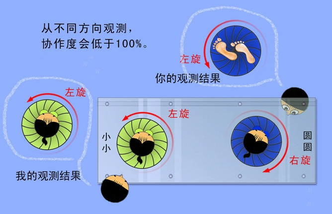

第十章 量子论四 何去何从
“最终，我们必须能将这一切解释给玛格丽特听。”玻尔在话剧《哥本哈根》中如是说。很显然，玻尔的梦想要落空。因为，薛定谔之猫带来的每一个问题，都是挑战人类智慧承受极限的重磅礌石，把物理江湖的顶尖高手都砸得晕头转向，何况是玛格丽特？！
物理学的辉光，对开启人类智慧的作用，怎么说也不为过。遥想物理当年，拿破仑翻完拉普拉斯的整本《天体力学》后，纳闷地问小拉：“你说你的大作里包括了宇宙所有的东西，但是，上帝在哪儿？”小拉爆屌地答道：“陛下，我不需要这个假设。”这个无比拉风的回答，不仅是物理学家的荣光，更是人类智慧上升到一个巅峰的骄傲宣言！
是的，我们不再向龙王求雨，不再恐惧彗星出现，不再害怕天狗吃月，不再沉迷无法证伪的花言巧语，不再相信某颗恒星代表某人的命运……这一切，得益于物理学及其带来的科学方法！
我们经历了多少蒙昧与挣扎，走过了多少思考与恐惧，才把神从自然规律中请出去，创造了一个规则简洁、因果明晰、运转有序的美丽世界，一切尽在优雅的物理定律掌控之中。
更重要的是，这个世界是客观的、实在的，它不以任何人的意志为转移，也不因任何人的行为而存在。
而眼下，量子论，准确地说是量子论的哥本哈根解释，却把“观测、意识、非客观、非实在”这些主观恶魔引入了自然。这也太不自然了！难怪爱因斯坦生气。估计牛爷和麦爷听说这事儿，也免不了吹胡子瞪眼。
为了搞定这些让人吐血的问题，物理学家们不得不寻找理想的理论——它既能解释量子世界的诡异行为，又能让大家心里舒坦些。于是，各种稀奇古怪的理论如雨后春笋，呼喇喇扑哧哧钻出地面，迫不及待地脱袍举竿，甩枝摇叶，一时间热闹非凡。
一马当先的，当然是听起来最舒坦的“隐变量理论”。因为这个理论的种子，早在世纪论战之初就种下了。还记得徳布罗意在1927年第五届索尔维会议上的发言不？他提出了“导波理论”：电子是一种既是粒又是波的存在，就像浪里浮萍，浮萍要去哪，浪说了算。那个“浮萍”，就是粒子。这个“浪”，就是“导波”，也就是控制粒子运动的“变量”。但是目前，我们搞不清楚导波丞相究竟是怎么做到挟天子以令诸侯的，这让粒子陛下的运动看起来像是一种“有规律的随机行为”，所以，这个看不清的变量就叫“隐变量”。因此，“隐变量理论”是在说：粒子运动“本来”不是随机的，只是我们还没搞清楚那个隐藏的变量究竟是怎么回事儿。
是的，一切的根源，就在于那梦幻般的波函数，什么叠加态、什么坍缩，什么与观测者相互作用，都是因为我们搞不清其中的具体机制，只能描述它的行为概率，所以，才捅出那么多幺蛾子。搞定隐变量，就搞定了物理，就可以让脚下不再绵软，让头顶不再虚幻，让内心不再飘摆，让世界充满爱。
然而，当梦想照进现实，我们才知道，现实并不爱梦想。徳布罗意的这颗隐变量种子刚撒到地里，就被泡利伙同玻恩和海森堡冲上去一通狂踩，深埋在地下不能呼吸、不见天日。当薛定谔之猫飞沙走石，搅得周天寒彻时，物理学家们自然而然地想到这颗希望的种子，准备松松土，浇浇水，让它生根发芽，成为量子大厦的栋梁。还没等动手呢，一座山突然砸下来，山上还贴了一条封咒，上书：唵嘛呢叭咪吽。
这位佛祖，就是鼎鼎大名的约翰?冯?诺依曼（John Von Neumann）。
冯诺依曼是匈牙利裔美国人，神级天才，在多个领域都是大腕，20世纪最伟大的全才之一，他是物理学家、发明家，他搞经济学，是博弈论之父；搞数学，成为20世纪最杰出的数学家之一；发展计算机，成为现代电子计算机之父。虽然天妒英才，只给了他54年生命，但他的传奇，从童年时代就上演了，他滥情学问，见一个爱一个，爱一个就搞定一个，读过的书过目不忘，多年以后仍能准确复述。据说，他6岁就能心算8位数乘法，还可以用古希腊语和老爸闲聊，一生熟悉7门外语，不到18岁就和老师合作发表了第一篇数学论文，不到23岁成为布达佩斯大学数学博士。28岁时，与爱因斯坦一起，成为普林斯顿大学的首批终身教授，一生载誉无数。他的贡献太多，清单拉出来太长，所以我们只好免单了。
在高手云集的量子论领域，冯诺依曼照样战功卓著，抢了一席之地。1932年，冯诺依曼写了一本书：《量子力学的数学基础》，给了量子力学一个严格的、统一的数学体系，这本书成为量子物理的圣经。不过，在这里，它的历史地位不是重点，重点是，书中有一个有趣的探讨：是否可能通过引入隐变量，把量子力学变成一个确定性的理论？小冯的答案是：否。他知道，空口无凭，于是顺手甩出一个数学证明，抹煞了隐变量理论逆袭成功的希望。
小冯也承认，量子力学在数学上与实验符合得很好，但它只是最好的经验总结，而不算已经被证明了的理论。尽管如此，也没有谁怀疑冯大师给出的那个数学证明。人们一看，这个证据是冯诺依曼给的，就全盘接受——当代最伟大的数学家之一嘛！
然而，还真有不信邪的——又是两个年轻人：一个叫玻姆，另一个叫贝尔。爱因斯坦的追随者。
戴维?约瑟夫?玻姆（David Joseph Bohm），1917年12月生于美国宾夕法尼亚。犹太血统。企业家父亲想让玻姆继承父业，搞好家具生意，但玻姆迷恋自然规律，好学不怠。1939年，玻姆取得宾夕法尼亚大学科学学士学位，又到加利福尼亚大学的伯克利分校，成为奥本海默（Julius Robert Oppenheimer曼哈顿工程的主要领导者之一）的博士生。1947年，玻姆到普林斯顿大学任助理教授。
玻姆早就迷上了相对论和量子论，而来到普林斯顿大学，相对论的缔造者和量子论的奠基人爱因斯坦就成了他的同事。玻姆对哥本哈根解释也不感冒，尤其是对EPR实验的解释。他相信，一定是某个隐秘的机制没搞清楚。在研究中，他把EPR实验升级成了简洁明快的自旋版。玻姆把自己的想法跟老爱聊了聊，老爱鼓励这个年轻人，多多研究哥本哈根解释。
玻姆要搞清楚的那个隐秘机制，也就是所谓的隐变量。玻姆也知道，小冯大师早就给隐变量判了死刑。但是，跟老爱聊过之后，玻姆感到很振奋，决定完成这个不可能的任务：复活隐变量理论。他做到了。
实际上，隐变量这东西并不稀奇，还记得布朗运动吧？花粉微粒的运动，就是由看不见的液体分子撞击导致的，它们来回折腾，冲撞花粉微粒，让微粒看起来莫名其妙地运动。如果我们得到液体分子运动的翔实数据，就能算出花粉的运动路线。但是在布朗时代，人类不知道有液体分子这码事儿，那么，液体分子就是“隐变量”。后来老爱用统计方法，搞定了布朗运动，这个统计方法，就相当于量子论的数学公式。它很好用，但没有完整描述每个微粒的精确运动，只是描述了它们的运动概率。
另一个类似的例子是，波义耳发现了气体定律：温度一定时，气体体积与压力成反比。虽然公式很好用，但他不知道为什么会这样。后来，麦克斯韦发现，气体压力是分子运动、撞击容器壁引起的。对波义耳来说，分子运动就是隐变量，他的“体积与压力反比”公式，就相当于量子力学的数学公式。它与实验相符，但所描述的不是事实的全部。
这样的例子还有很多，比方说，牛顿发现了万有引力，然而，引力是什么，他不知道，但这并不代表引力是无源之水，那么，引力子、时空弯曲对牛顿来说，就是隐变量，他给出的万有引力公式，就相当于量子力学的数学公式，而牛顿力学解释，就相当于哥本哈根解释。再比如：希格斯粒子曾经是质量的隐变量，原子能量层级曾经是光谱的隐变量，维护无效的监督制约机制现在是官员贪腐的隐变量，老婆的情人常常是受冷落丈夫的隐变量等等。
玻姆为量子力学量身打造的隐变量理论，实际上是徳布罗意导波理论的升级版。在这个升级版中，粒子陛下还是那个粒子陛下，然而，导波丞相却已变身为“量子势”丞相。量子势继承了波动的性质，按照薛定谔方程演化，却有着波族望尘莫及的手段，波的影响力随着传播范围的扩大，强度逐渐衰减，而量子势完全不用考虑强度问题，因为它可以弥漫到整个宇宙，而毫无衰象，其势力范围令人匪夷所思。但是我们都不用担心被浩瀚的量子势挟持，因为量子势虽然霸道，却并不滥情，所以每个量子势丞相只掌控自己的那个粒子陛下。宇宙中的任何时空角落发生了什么，量子势丞相都会实时掌握消息，并即时作出反应，控制粒子陛下的行动。
一个经典粒子发出一个神通广大的量子势，并受控于它。在这个基本原理的指导下，玻姆玩儿起了他的拿手好戏——数学，巧妙、精密地建立了隐变量理论系统，试驾了下，运转自如。1952年，玻姆的新版量子力学——隐变量理论悍然矗立在原版量子力学面前，耍了一套量子神功，用实力宣示：“你能做到的一切，俺全能做到；哥本哈根派能解释的，俺全能解释！俺们的口号是：一切为了取代原版，为了取代一切原版，为了取代原版一切！”
原版一看，不得了，你这是要跟老衲死磕啊！仔细一看，可不是！隐变量的这套量子神功招法精到，内力雄浑，不管从哪方面看，都毫不逊于原版！就说高难度动作单粒子过双缝吧，用量子势来对付，就显得游刃有余：当粒子殿下浑浑噩噩地朝双缝溜达时，量子势丞相已然探明前方有两条缝，以及缝宽缝间距等情报，于是启动干涉模式。而当有人搞破坏，堵上其中一条缝时，量子势丞相也会立即得知，并随时调整粒子陛下的行程，启动衍射模式。至于让大家纠结的EPR实验，就更好解释了，两个粒子的量子势即时联络，随时调整配合，不存在什么诡异的“完全随机+高度协作”矛盾共同体！
另一位不信邪的年轻人贝尔看了玻姆的隐变量理论，欣慰地写道：“我看到不可能的任务完成了。”
约翰?斯图尔特?贝尔（John Stewart Bell），1928年7月生于北爱尔兰的一个工人家庭，由于父亲的工作时有时无，所以家境窘迫。苦孩子贝尔从小就定了个不切实际的目标——当个科学家。为了实现他的理想，全家都喊他“教授”，但是光喊外号是不解决问题的，于是家人又做了第二件事：举全家之力供他上中学。这让他的一个姐姐和两个弟弟没了上中学的机会。贝尔没让家族失望，他中学毕业后，靠自己打工和奖学金完成了皇后大学的学业，捧回了实验物理、数学物理两个学位。
量子论的深邃、神秘、不羁和瑰丽，都让贝尔痴迷。然而，量子论的哥本哈根解释，贝尔一点也不喜欢，这就像给心中的女神穿了一件僧衣，怎么看怎么别扭。贝尔相信，世界是实在的、客观的、确定的，而不会是“你去观测它，它才根据你的观测方式，随机甩给你个结果”那样不着调、不踏实。贝尔憧憬爱因斯坦理想中的世界。所以，他也考虑过隐变量的问题。然而，他悲哀地读了玻恩写的一本书，在这本书里，玻恩提到，隐变量已经被小冯大师判了死刑。冯诺依曼的书是德文的，贝尔不懂德文，所以没法看原著。不过，冯诺依曼何许人也？！那不是人，是神！何况是数学控玻恩在书里介绍的，谁还会怀疑那个数学证明呢？于是，贝尔断了隐变量的念头。
所以，当他看见玻姆的隐变量理论时，一种他乡遇故知的感觉油然而生。不可能的任务完成了，这说明什么？说明这个任务不是不可能的！恰好，1955年，冯诺依曼著作的英文版出版了，于是，贝尔用狐疑的目光重新审视小冯大师的那个证明。真是不看不知道，一看吓一跳。
我们知道，所谓概率波，就是所有可能的叠加，换言之，这些概率分布是可以叠加的。那么，你多次观测波函数坍缩的结果，把每次观测的结果叠加起来，计算一下，就可以得到波函数坍缩后的平均值，或者叫期望值。举个例子：
大家都知道，扔硬币得到正、反面的概率各占50%，扔1枚得到正面的概率是0.5。那么，我们一次扔3枚，可能得到几个正面呢？有4种可能：0、1、2、3，平均起来是（0+1+2+3）/4=1.5个。这个平均数，就是扔币总数的50%，也是扔硬币单面出现的概率。那么，我们2次共扔6币，得到正面的期望值就可以这样算：1.5+1.5=3个。以此类推，扔100次（300枚），得到正面的期望值就是150个。
现在，咱俩就来玩儿这个无聊的游戏：扔硬币。规则是，每一轮，我扔1次，每次扔3枚；你扔3次，每次扔1枚。你我每轮都是扔3枚硬币，每轮得到正面的可能都包括了0、1、2、3，很公平。
好，游戏开始，每扔一轮，就自己观测自己扔出了多少正面，并记录下来，强调一下，这些结果当然是完全随机的。咱俩分别把自己记下的结果叠加起来，算一下，就会发现，扔的轮次越多，正面个数就越接近扔币总数的50%，也就是越接近期望值。这是什么意思呢？就是说，我1次扔3枚，你3次各扔1枚，得到正面的概率是一样的，换句话说，我1次扔3枚所得正面的期望值，等于你3次各扔1枚所得正面的期望值。所以说，完全随机的结果的平均值可以叠加。那么，你我扔币的统计结果，就有线性叠加关系：
（A+B+C，ψ）=（A，ψ）+（B，ψ）+（C，ψ）
左面，是我1次扔3枚所得正面的期望值；右面，是你3次各扔1枚所得正面的期望值。
A、B、C，就是对各硬币的一次观测，也就是观测A、观测B、观测C；那个ψ，咱俩都认识，它是0、1、2、3这4种可能的叠加，我们扔币后观测的结果，就相当于波函数坍缩的一个随机结果。
这个式子换成具体的期望值，看起来就清楚了：1.5=0.5+0.5+0.5。
OK，冯诺依曼给出的数学证明，一共5个假设，其中，第5个假设给出的数学形式大致是这样的：
（A+B+C，ψ，Y）=（A，ψ，Y）+（B，ψ，Y）+（C，ψ，Y）
那个Y，就是传说中的隐变量。咱俩刚才玩扔币游戏，是没有隐变量的。现在，冯诺依曼考虑了隐变量。
这个式子在说：即使有了隐变量，这个系统依然是可以叠加的！
贝尔惊奇地发现，这个假设摊上大事儿了，问题就出在Y身上：隐变量Y的结果是确定值，ψ是概率的，你观测它，会得到一个随机结果。这些随机结果，按照波函数的概率分布，而波函数，是所有可能的叠加，其中自然包括了Y的可能分布。也就是说，ψ和Y不是并列关系。更重要的是，Y导致的是确定值。确定值是不能线性叠加的。
还是刚才那个游戏，我1次扔3枚，得到一个确定的正面数：3个。你3次各扔1枚，得到3个确定的正面数：0、0、1。很显然，3≠0+0+1。再扔一轮，我得到1个确定值1，你得到3个确定值：1、1、0。1≠1+1+0……按照概率，如果一轮一轮累加下去，等式两面的值会越来越接近，问题也不大。但是，冯诺依曼上面给的式子在说，你我每轮扔币得到的确定值必须相等！这可玩儿砸了！
贝尔简直不敢相信自己的眼睛，但他不得不相信自己的眼睛，白纸黑字，毋庸置疑啊！这个错误好像很幼稚，但的确是数学大师冯诺依曼犯下的！
冯诺依曼狂拽炫酷的天才曾经惊呆无数牛人，不说学识，单说他闪电般的思维，就可以用恐怖来形容。他的周围常常是诺奖获得者之类的牛人，但冯诺依曼仍然可以鹤立鸡群。一次，美国物理学家塞格雷（Emilio Gino Segrè诺贝尔物理学奖获得者）和另一位诺奖获得者为一个积分奋力拼搏，却毫无结果。一筹莫展之际，他俩发现冯诺依曼在走廊飘过，于是拖来办公室请教，那个难题就写在黑板上，冯诺依曼来到门口，瞟了一眼黑板，立即给出了答案，然后飘走了，留下俩目瞪口呆的诺奖获得者，他们被另一个问题难住了：俺们俩奋战了一小天都没解决的问题，冯诺依曼是用什么办法在3秒之内解决的？冯天才类似的故事一抓一大把，就不多说了。总之，大家都怀疑他不是地球人，所以叫他外星人。然后，圈子里出了个“冯诺依曼公式”：
（A）冯诺依曼可以证明任何事。
（B）冯诺依曼所证明的任何事都是正确的。
然而，他的第五假设证明这个公式是错误的。上部说过，2300多年前，欧老就被他的第五公设折磨得寝食难安，而如今，冯天才干脆直接栽在他的第五假设上。真是造化弄人啊！
事实又一次有力地证明，小沟翻船莫骂娘，高手失足更坑爹！慑于冯诺依曼的威名，30年来，从来没人怀疑这套数学证明会有错误，尤其是不敢想象竟会有如此低级的错误。所以后来大家怀疑，这套证明根本就没人仔细看过，估计是大家只关心冯诺依曼的结论，反正这套证明已经告诉我们隐变量不靠谱就OK了，相信他，没错的，管他怎么证明的？！发现这个错误后，贝尔说，这个证明不仅是错误的，更是愚蠢的！
对不起，佛祖，你的封咒写错字了！孙猴子已经上天了！
宣判无效，隐变量是合法公民。世界还是那个世界，熟悉、亲切、踏实、温暖，爱因斯坦的梦想要实现了！好像有两个字要跳出来了：完美！
不过，等等，经验表明，每当我们以为问题已经完美解决时，就要出大事！果然，有人在反对，并且很大声。谁啊？
爱因斯坦。为什么呢？玻姆是在支持老爱，老爱为什么要反对？
很简单，作为一个孤独的探路人，爱因斯坦始终是在寻求真相本身，而不是在寻求支持者。表面上看，玻姆的隐变量理论可以替代哥本哈根解释，光复实在和决定的美好世界，但是，他付出的代价和使用的手段，都是爱因斯坦不能忍受的。
首先，玻姆扔掉了经典世界的一项重要属性：局域性，或者叫定域性——前面说过，这是指在一定时间内，事物的影响范围都是有限的，而不是无限的。因果关系也是一样。而玻姆的量子势完全不拿局域性当回事儿，不论远隔天涯海角，还是宇宙洪荒，量子势都能随时把消息传给粒子，并即时左右粒子的行动，视相对论的禁令为无物。想想看，浩瀚宇宙中有多少个粒子啊！每个粒子的量子势都能即时刺探和通报宇宙任何一个角落的消息，所有粒子都知道所有粒子的隐私，整个宇宙通透无比，多大的屏障也不是屏障，多远的距离也不是距离，这是一个多么恐怖和荒谬的世界啊！
其次，这款理论虽然马力强悍，转向平稳，钣金厚道，操控性强，但是，多了一样东西，而这个多余的东西，正是隐变量本身！这就好比你改装了一辆赛车，这次改装以加了一个备用油箱为标志，它可以让车跑得更远，但是，你忘了，这是F1赛车，油够跑一圈就OK了，并且，备用油箱的增重，减慢了速度！所以，那个标志性的改装就成了多余的第六根手指！隐变量理论说，量子行为之所以在我们看来是概率的，那是因为隐变量的扰动在捣乱，让我们观测不到粒子们的确定行为。我们观测不到，不代表它不存在。现在，隐变量拿出量子势，来解释这些扰动，但也只是停留在“解释”上，至于那个“确定的行为”，它还是没描述出来。也就是说，你弄了个九转十八弯，得出的结果跟原版量子力学一样，依然是概率的！只不过是把哥本哈根解释踢下马，又把隐变量解释扶上马。如果仅仅是一个上马、一个下马，倒也没问题，优胜劣汰嘛！问题是，同样的结果，原版数学形式体态玲珑、线条明晰、健康优雅，美得自然而又科学。而用了隐变量解释，没改变概率的结果不说，还把整个数学的体态搞得臃肿不堪，仔细一看，那坨多余的肉正是隐变量！大家都是玩儿奥卡姆剃刀长大的，你搞这么累赘不是找削么？
最后，老爱客气地回帖点评：此理论价值不大。
物理学被冲击到一个陌生的险境，进退不能，危机四伏，看哪儿都头大。
不过，有的科学家却没啥烦恼。因为，他们认为，根本不存在任何问题，什么这解释、那解释，统统都是庸人自扰。这些实用主义、工具主义的科学家认为，对于世界，我们只需会“算”，无需去“懂”。世界是什么样？世界为什么是这样？那是哲学的事，科学只要有实验、观测、方程、计算就OK了，对于量子力学，我们只需留下它的数学体系，让什么哥本哈根解释、隐变量解释等N多解释统统见鬼去吧！康奈尔大学的物理学家大卫?默明（David Mermin）的这句话相当到位：“闭上嘴，计算它！”。史称“闭嘴计算解释”，也就是传说中的“不解释”。
然而，留下技术，扔掉认识，很多物理学家无法接受。因为，多数物理学家的初衷，是做一个世界真相的探险家，而不是当一个制造工具的高级技术员——虽然实用性是科学的主要属性之一。
是的，没有了对世界的精确计算，物理学将失去99%的生命力，而离开了对世界的深刻认识，物理学也就失去了99%的吸引力。好吧，我们需要解释！
一套倾倒众生的数学体系，配着一套雷倒众生的哲学解释，这款怪异混搭，让量子力学成为物理江湖的风暴眼，看似纯净无辜，却聚焦了四海涌动的思潮，所到之处，地覆天翻。是的，物理江湖从未如此动荡。乱世无宝，很多珍如生命的东西，就像生命一样被弃如敝履。
为了回归经典，玻姆扔了不少东西，包括经典本身。看来，经典不那么容易回归。然而，跟着哥本哈根解释走，似乎也只是无奈之举，没有多少人心甘情愿。因为，哥派指的路，更是让人心惊肉跳。
我们回到薛定谔猫对哥派解释的拷问：
猫真的既死了又活着吗？这是关于叠加态、坍缩、概率的问题，为了搞定它，玻姆壮士断臂，不惜抛弃定域性，却只能作出“解释”，而没能改变叠加态、坍缩和概率的数学结果。
观测仪器和观测对象的关系问题。玻尔给的“盲人拐杖”解释，让人嗅到一股浓烈的哲学应付味道，听起来满是道理，却毫无用处。玻尔谈物理必先谈观测，但始终没清晰地定义什么是一次“观测”，如果说，眼睛看是观测，那么，用手摸、用耳朵听，用鼻子闻、用舌头舔、用照相机拍算不算观测？如果科学家“看”是观测，那么，警察看、十二岁女孩看、一岁半男童看、摄像头看、猫看算不算观测？这些问题，玻尔不会给你一个明确的答案。
冯诺依曼提供了一个解决方案，他指出，仪器本身也是粒子的组合，所以，仪器也有波函数。这个说法，我们并不陌生，这其实就是“月亮姐姐在哪儿”的问题，人造的仪器也和纯天然的月亮姐姐一样，都由不确定的粒子组成，你不观测它，它就处于朦胧的叠加态。所谓月朦胧鸟朦胧，只不过是观测问题。就像薛猫一样，盖革计数器观测原子射没射中子，原子处于射与未射的叠加态，计数器就处于收到与没收到中子的叠加态。那么，锤子砸\没砸，药瓶碎\没碎、猫死\没死……都处于叠加态。同理，你用别的仪器去观测盒子里发生的某件事，这个仪器也会处于叠加态。
与玻尔不同的是，冯诺依曼不只是解释，他还买一赠一，提供了数学模型。冯大师的数学模型动用了他命名的“希尔伯特空间”。在冯版量子力学中，一个物理系统可以表示为一个复希尔伯特空间。模型显示，所谓波函数，是复希尔伯特空间的一个向量，所谓坍缩，就是这个向量在某个方向的投影。盖革计数器“观测”原子，原子的波函数倒是坍缩了，但计数器自己却癫狂了——叠加态转移到计数器身上了——它处于收到与未收到的叠加状态，坐等下家来观测；如果来了一台仪表去“观测”计数器，仪表就杯具了，叠加态转移到仪表身上了；而用摄像机去观测仪表，好吧你已经知道了——仪表的波函数坍缩了，确定了，叠加态又转移到摄像机身上了……不管你加多少仪器，最后那台，总是处于叠加态，整个系统还是处于不确定状态！这个疯狂的机制叫做“无限复归”。粒子就像大话西游里的紫霞/青霞仙子，二人叠加在同一个肉身上。而观测就是移魂大法。想让青紫叠加态坍缩成一个，就得有下家多接一个灵魂，变成叠加态。那么，谁来终结这个狗血的叠加态呢？大话西游里真的用了一只狗，它的肉身分担了一个人的灵魂，这才解决了整个系统总有一个叠加态的尴尬。不过，这个办法本身也很尴尬：狗身上是不是叠加了两个灵魂呢？香香+狗叠加态？如果“意识”算是灵魂的话，按照哥派对薛猫的解释，猫既然处于生/死叠加态，就说明，它的观测没有让波函数坍缩，也就是说它没有意识。因此，狗也一样，应该是没有意识的，所以，这个神话中的“意识叠加态”也就终结了。
那么，在量子世界，谁能终结整个系统的不确定状态呢？这就是 “猫可以是观测者吗？”的问题。是我们——只有人可以终结叠加态。实验表明，我们观测时，波函数的确坍缩了。可见，在波函数面前，比的不是眼力，而是理解力！在观测这个问题上，人与阿猫阿狗的区别，竟然在于：人有“意识”！
难道，世上本没有粒子，只有散漫的波函数被意识到了，才有了粒子，也便有了一个“实在的”世界？！或者说，一个庞大的复希尔伯特空间弥漫着无数向量，无怨无悔地苦等意识之光的照耀，好屁颠屁颠地去投个影？！这简直就是胡说八道！然而，让人胸闷的是，到目前为止，所有观测结果都证明这不是胡说八道，至少没有一例实验证明这是错的。可是，凭什么只有意识才会让波函数坍缩？波函数又是怎么知道它自己 “被意识”到的？意识究竟是什么东西？意识究竟是不是东西？！
意识，是人的头脑对于客观物质世界的反映，是感觉、思维等各种心理过程的总和，也是人类知道自我、了解世界的核心。
意识，人类大脑的一切活动及结果，即作为具有自觉性的思维。
意识，是知觉、感觉或觉察的状态。
还有很多种，一般来说，能肯定地告诉你什么是意识的，都是各有侧重的哲学定义。虽然我们不能冒昧地说，这些哲学定义是片面的，但是，在这里，我们要的，就是一个严格的、完整的、精确的、被普遍接受的科学定义。
对不起，让大家失望了，关于意识，目前，憨直、厚道、一根筋的科学还没给出一个确切的定义。可以说，关于意识的探讨，还在模糊和混乱之中。这样也好，我们可以乘乱探讨一番，而不必担心“错”得太离谱。
还是从薛定谔猫开始。根据测不准原理，观测必然产生骚扰，比如光子撞原子什么的。那么，薛猫盒子里的瓶碎了，它的声音传出来，是不是一次观测？我们没有对盒子里的任何东西产生骚扰，因为即使我们不在那儿，声音该传出还传出，是吧？所以，这应该不算一次观测。
但是，根据冯氏数学模型，这就是一次观测。空气振动传到人耳朵里，这时候，空气分子就成了观测手段的一部分，它们用振动向人传递了信息，让人“意识”到猫应该是死了。
然而，在声音传出之前，我们是不是可以“确定”猫还活着呢？没有声音时，猫还是死/活叠加的吗？
哈，晕了吧？其实，上述都是不该问的问题。要知道，薛猫的盒子是不允许这些问题出现的。因为，盒子的作用，是让你 “不能观测”，而不仅仅是让你 “眼睛看不见”，所以隐含了隔音、防震等功能，让你不能通过任何手段去观测。
既然都是不该问的问题，为什么还要一本正经地来探讨呢？因为，所有这些，都直指一个让人头疼的问题：即使没有什么光子观测扰动，这也是一次观测——只要信息泄露给了人，让人“意识到”了，波函数就会坍缩！
那么，如果在盒子里安一个麦克风，连接到盒外的音箱，实验相关人员统统撤离后，一个人打酱油路过，他听到了音箱传出药瓶破碎的声音，却不知道这是什么声音，也就是说，他没“意识到”这声音关系到一只猫的生死，那么，这算不算一次观测？这时节，猫是死了还是处于死/活叠加态呢？
猫应该是死了。因为，这个实验有个狗血的假设：声音被音箱传出。这说明瓶子已经碎了。另外，接了麦克风和音箱，盒子就是透明的了，跟不设置盒子区别不大。
然而，打酱油的问题依然存在：盒子的作用，是为了不让人观测，如果没有盒子，把“敲碎药瓶”改成“引爆炸药”，把猫拴在炸药旁边，撤离所有实验者。那么，路人经过，听到爆炸声，却为了酱油大业绝尘而去，根本没去观测究竟发生了什么，这时，猫是死是活？
什么？你说猫死定了？你怎么能“确定”路人听到的一定是猫旁的炸药爆炸声？你又怎么确定爆炸现场的死亡率一定是100%？所有这些问题，都可以参照有关“月亮姐姐在哪儿”的探讨。
哈哈，这其实是一次小小的意识体操。为什么要搞这次头脑热身？因为，前面来了一个很容易让人崩溃的朋友。
维格纳的朋友。
前面介绍过，狄拉克娶了维格纳的妹妹。但维可不是靠当狄的大舅哥出名的。在美国，他在几所著名大学及许多科研机构任职，著作颇丰。由于“在原子核和基本粒子理论方面的贡献，尤其是对称性原理的发现和应用”而获诺奖。维格纳认为，既然外部世界可以影响意识，意识为什么不可以影响外部世界呢？当然“可以”。这是牛爷早在三百年前就制定的第三定律——作用与反作用啊！
根据这个古老的原理，维格纳升级了薛定谔猫：他让一个朋友戴着防毒面具在盒子里与猫共舞，而维格纳本人则躲这个盒子远远的（损友啊！），一副不忍直视那个凶残盒子的样子（节操啊！）。那么，对维格纳来说，他观测不到盒子，盒子里的一切对他来说，是不是处于（活猫+高兴的朋友）/（死猫+悲伤的朋友）叠加态呢？
点击图片查看幻灯模式
【图11.5】维格纳（右）和海森堡
维格纳给出的答案是：不。可以肯定，朋友出来后，一定会告诉维格纳一个确定的答案，而不是一个“叠加”的答案。因此，可以确定，当一个系统中包含了意识时，叠加态就消失了！
又是意识！并且这回更明朗了，意识，正是叠加态终结者！
于是，我们不得不面对前面提到的那个让人头疼的问题：意识究竟是什么东西？意识究竟是不是东西？！
既然维格纳把牛爷第三定律搬出来了，我们也只能先设定“意识”是东西，是物质行为。因为，能与物质产生作用与反作用的，只能是物质。除非你能用严谨的、可重复的科学实验证实某些玄玄乎乎的“神迹”。
当然，意识本身不是电子啊、介子啊、夸克啊之类的具体物质。然而，意识的存在，却离不开物质。
正如信息，信息本身绝不是物质，但它却绝对需要靠物质来承载和表达。没有了物质，也就不存在什么信息。比方说“同意”，是一个信息，但你能说它是某种物质吗？“同意”是房子？是泪水？是人头？是文字？是眼神？都不是，然而，这些东西统统可以用来承载和表达“同意”这个信息。你对女孩说：“嫁给我吧。”女孩可以有无数种反应：
普通版：嗯。
文艺版：妙目噙泪。
现实版：有房吗？
浪漫版：上天的安排？
女汉版：艾玛，你咋才说呢！
猫鼠版：死鬼，太突然了。
……
所有这些千奇百怪的反应，都是在向你传达同一个信息：同意。不管用哪种，都会让你幸福得像花一样。
那么，这些表达方式都是“同意”的意思吗？当然不是，如果换一个场合，意义就完全不同了，比如，你面对的是一个医生，问：“我真的没救了吗？”上面的每一个回答就都很恐怖，不管哪一个，都会让你毛骨悚然。
你把这几句话单独写出来，贴在电线杆小广告旁，或者录音，在人民大食堂播放，不会有人知道这些话代表什么意思。如果放在老鼠洞里，或者放在火星上，这些文字就毫无意义。这说明什么呢？说明离开交流和理解，物质无论怎么折腾，也不能成为信息。反之，只要可以用来理解和交流，怎么样都可以是信息。不信？你在山路上看到一块很随便的石头，或者一根很普通的断树枝，这是信息吗？当然不是。因为你完全不能理解某块石头为什么躺在那儿，你也完全不关心某根树枝为什么会死在这儿。然而，如果这石头、断树枝是驴友用来做标记的，那么，对驴友而言，它就是生死攸关的信息！
我们的所谓“意识”，其实就是大脑在接收、存储、处理和产生信息。那么，大脑是怎么工作的？虽然这个问题的难度丝毫不亚于“宇宙是如何运行的”，但是，一个很基础的答案却很靠谱：大脑是靠神经元、神经网络之间传递、重组某种物质来工作的。这些物质，有蛋白质、电信号、激素等等，不管是什么，归根结底，都是原子、电子等粒子的运动、排布，以及它们间的相互作用——我们在这里称之为“物质行为”。正是这些物质行为，承载和创造了我们的“意识”。
或许，就是这类物质行为，跟波函数相互作用，让它坍缩了？
这话，乍听起来，很有道理，然而，稍微一分析，就很难站住脚了。因为阿猫阿狗们的大脑也是这样工作的，为什么它们大脑的“物质行为”就不能让波函数坍缩呢？
这位说了，因为阿猫阿狗的头脑太简单，那些物质行为不足以让波函数坍缩。当真如此吗？其实，阿猫阿狗们的大脑也有神经元、神经网络这些高端大气上档次的配置，大致结构跟人脑差不多，大脑工作原理一样，也是靠传递、重组蛋白质、电信号、激素之类的物质来实现的，构成大脑的基本物质更是别无二致。那么，凭什么它们的观测就不能让波函数坍缩？难道，是因为人脑大，物质行为的作用力也就比其他动物大？可是论体积，蓝鲸大脑是人脑的5倍，大象大脑是人脑的4倍，差远了！这位童鞋说了，那可能是因为“人脑与体重的比值”最大吧？这就更不靠谱了，难道波函数先要测算一下观测者的脑化指数，再决定是不是要坍缩？！
从物质的角度看，人脑也好，动物大脑也好，成分都差不多：近80％的水、10％的脂肪、8％的蛋白质，还有些矿物质什么的。更基本地说，就是碳、氢、氧、氮、硫、磷、铁、锌、铜、硼、锰、碘、钼等等各种原子。要是硬找人脑与动物大脑的区别，还真有：人脑的“带状前回”中，有一种“巨型纺锤神经元”。这种神经元，成分没什么特别，功能上，目前也看不出它有什么特殊，只知道它比其他神经元胖很多，而且很奇葩，只有在人脑和类人猿脑中才找得到。并且，数量不一样，人的比较多。相同单位的“带状前回”截面上，比较一下胖神经元数量，大致关系是：人90个，倭黑猩猩70个，黑猩猩40个，大猩猩20个。当然，“90” 这个指数，是成年人的标准。我们的婴儿出生时，没那么多胖神经元，长到4岁时，才达到标准。
难道，是这种巨型纺锤神经元的活动造成了波函数坍缩？这也很难站住脚。首先，一个最现实的问题就很难回答：波函数怎么会识别什么巨型纺锤神经元呢？难道就因为它是神经元帝国唯一的胖子？“除了它我们谁都不认”？！其次，如果他们真的只认它，那么，要不要辜负猩猩们的观测呢？要知道，猩猩们的神经元里也有胖子啊！如果猩猩们观测不坍缩，那么，不足4岁的人类娃娃去观测，会不会坍缩？！值得期待的是，两三岁的娃儿已经会说话了，能描述他们所见的简单现象，如果实验设计合理，娃儿们就可以告诉我们，他们看到了什么，这就是说，即使娃儿们的神经元胖子的密度只比得上猩猩，照样能造成波函数坍缩，因为他们能意识到自己看到了什么。
然而，即使胖子是闹饥荒的原因，也不能断定胖神经元是搞坍波函数的原因。所以，从大脑物质结构来分析波函数坍缩机制，极有可能是死路一条。
但是，如果不考虑物质运动，单从“有没有意识”这个角度去判断波函数该不该坍缩，恐怕路更难走。
根据咱俩的能力，我们只能把“什么是意识”这种不可能出结果的问题放到一边，先假设我们人类拥有一种叫做意识的东西，它以记忆的信息形式存储在大脑里。那么，这种信息，就可以看做电脑磁盘中的数据，是分子、原子的某种排列方式。我们前面讨论过，分子、原子是物质，但它们的排列方式不是物质，而是信息。
我们的大脑产生记忆，实际上是一种叫做“克列伯蛋白”的东西进入神经细胞核内，让基因产生某种特定物质，就算是完成了信息的“写入”。工作原理跟“数据写入磁盘”差不多，都是重组原子、分子的阵列。既然如此，就存在这样一种可能：拷贝大脑信息。其实，关于这方面的研究，科学家们早就有了设想，甚至有人已经设想通过储存记忆来实现“长生不老”。
好吧，问题又出现了：如果把尹志平的记忆拷贝到小龙女大脑里，他会不会自恋得发疯？此时他去观测杨过，是该爱他、怕他还是恨他？或者，把科学家的记忆拷贝到电脑里，用这台电脑去观测薛猫，盒子里的情形是叠加的还是坍缩的？如果因为电脑拷贝了人脑的数据，而具有了意识，便可以让波函数无条件坍缩，那么，就说明电脑磁盘中的物质经过适当的排列组合，也可以催生高端大气上档次的意识——从1997年超级计算机“深蓝”战胜人类国际象棋冠军卡斯帕罗夫那天起，我们就不敢怀疑这种可能性。问题是，这种排列组合，需要复杂、精巧到什么程度才可以产生意识？或者说，机器也好、生命也好，处理信息的能力达到什么程度才算有了意识？讨厌的“谷堆悖论”又来了：1粒、10粒、200粒谷子都不算一堆，那么究竟从多少粒谷子开始，才算是一堆？
OK，咱俩必须承认，作为非专业人士，讨论这些连专业人士都没解决的“意识”问题，只会让我们的意识越来越模糊。所以，我们还是回到实验的坚实土地上OK？OK。
首先是思想实验。莱布尼茨（Gottfried Wilhelm Leibniz）假设：一台超大机器，靠复杂精巧的物质结构造就了意识，那么，我们走进机器去旅游观光，只能看见零件运转，根本没有任何东西可以解释思想、知觉之类的东西，所以用物质来讨论精神是不靠谱的。但是大卫?科尔（David Cole）反驳道：你把一滴水放大，直到水分子像拳头那样大，我们进去参观，也看不到任何湿的东西，但你能否认这滴水是湿的吗？
1950年，英国著名数学家、逻辑学家、密码学家，计算机科学之父、人工智能之父艾伦?麦席森?图灵（Alan Mathison Turing）提出一个“冒充游戏”，让一个人提问，一台计算机和一个人藏在幕后回答。提问者想尽办法，通过各种提问，试图分辨出谁是计算机。如果不管怎么问，也分不清谁是机器，那么，就证明这个机器有了智慧，也就是我们要的意识。这个实验叫做“图灵检验”。计算机技术的飞速发展，让人相信，人机难辨指日可待，甚至有个关于“2029年是否有计算机通过图灵检验”的专门赌局。
然而，美国哲学大师约翰?塞尔（John Searle）却兜头泼了一盆凉水：就算你分不出谁是计算机，也不能说计算机就有了意识。1980年，塞尔提出“中文屋”思想实验：一个懂英文的中文盲被锁在屋子里。屋里只有一本工具书，英文的，叫做《收到中文字条攻略》。第一天，从门缝里塞进一张中文字条。于是中文盲按照工具书介绍的规则，在纸条上找到特定的字符。第二天，又收到一张中文字条。中文盲按照工具书的进一步指示，把两张字条结合起来，进行关联加工，并且按照规则，挑出一些字，抄到一张空纸上，从门缝塞出去。从始至终，中文盲仍然一个中文也不认识，他只是很熟练地应用了规则。他不知道的是，第一张字条写的是一个故事，第二张字条写的是基于这个故事的问题，而他抄写的字条，就是这个问题的答案。塞尔说，这个中文屋的机制，就是一个复杂而巧妙的算法，这个算法完美到可以模拟一个懂中文的人。然而，不管屋子里传出来的答案有多完美，即使跟真懂中文的人不相上下，也不能说明“中文屋”懂中文了。结论：再高明的算法也只是算法，它不是意识。
“中文屋”悖论争议不断，具有代表性的反对意见，叫做“系统观念”：中文屋是一整个系统，比方说，屋子是机箱，门是输入输出设备，工具书是存着应用程序的硬盘，人是CPU，纸条是输入输出介质。这个系统是“认识”中文的。你不能因为那个CPU不识中文，就断定这整个系统不识中文。正如人的大脑，也是一整个系统，大脑的某个部位没有意识，但你不能因此就说，这个系统不存在意识。意识是整个系统工作的结果。中文屋也一样，整个系统的工作过程，让这个系统“认识”了中文。
塞尔说，好吧，就算这个系统认识中文。那么，让我们把这个系统浓缩一下：先破门而入，强行揪出那个中文盲，烧掉工具书，推平房子，把地卖给开发商。斯时，就只剩下这个立于天地间的人，好在他已经把工具书倒背如流——也就是说，没有了屋子和书，他仍然可以重复整个中文屋系统的工作！是的，现在，这个人就是整个系统！问题是，他认识中文吗？
所以，再高明的算法也只是算法，它不是意识！
哗！让咱俩长舒一口气，因为用我们的意识进行思想实验来讨论意识，实在是一种折磨！那么，在实验室里，用真正的实验来研究意识，会不会轻松些呢？
1980年，美国加州大学旧金山分校神经学科学家本杰明?利伯特（Benjamin Libet）搞了个自由意志实验。实验很简单，让被测试者抬手臂，测量3个时间点：1、决定行动（人意识到自己要抬手臂）时间； 2、大脑准备电位发生时间；3、实际行动（抬手臂）时间。猜猜看，哪一步最先发生？
按照“我的身体我做主”的原则，当然是人的自由意识先决定抬手臂，然后把指令下达给大脑中的“手臂管理员”，由它去操纵手臂抬起来。
然而，结果却出乎所有人意料之外：竟然是大脑先计划抬手臂，然后意识才“决定”抬手臂。注意：大脑计划抬手臂，这是我们意识不到的！大脑计划做出0.3秒之后，意识才决定抬手臂，决定0.2秒后，手臂执行命令。也就是说，我们以为自己的意志可以决定身体行为，殊不知，所谓“自由意识”，只是在执行大脑0.3秒前制定的计划而已！难道，是我们无法察觉的神经活动在起主导作用，而自由意志是个假象？！
我们以为行为是由意识发起。可事实是，大脑的所有工作，都是神经元们闹腾的结果，意识也是这样来的。所以，先有大脑活动，再有意识，也算情理中事。我们所说的“我”，其实主要是指自己的自由意识。意识与肉体一起，构成一个完整的人。这个整体，当然是由“我”——自由意识主导。我们从未怀疑这一点。然而，这个实验残忍地揭开了真相：神经元们才是老板，它们开完董事会，做出决策后，才把“我”这个CEO叫到会议室，公布规划，由“我”领导肢体员工去执行！而“我”这个高级打工仔，还一直以为自己是老板！
嘛？你怀疑利伯特实验不靠谱？嗯，有道理，整个科学界都在怀疑。所以，大家纷纷实而验之。结果，还是那个结果。2008年，德国普朗克学会神经学科学家海恩斯（John Heinze）升级了利伯特实验，让受测试者选择用左手或右手按钮，研究人员监测其大脑活动。结果显示，大脑扫描器可以提前7秒预测其行为！7秒！意识“选择用哪只手去按钮”的决定，早在7秒前就由大脑的神经元活动计划好了！所以，在这个实验里，研究人员比被测试者更早知道他要用哪只手去按钮！够恐怖吧？！
那么，我们的所谓“自由意识” ，当真就是彻头彻尾的傀儡？利伯特给了我们一丝安慰：在行动实际发生前，我们的意识有0.2秒的时间可以否决大脑无意识的计划。这个观点让我们稍稍舒服了一些。然而，又有实验显示，似乎连否决也是由无意识率先发起的！
佛祖啊！
波函数只有被意识到才肯坍缩成实在的粒子，而我们引以为豪的意识却不由“自主”，那个“我”是大脑生化作用的副产品！这套倒霉机制的设计，PS痕迹太重，以至于让人不由自主地想起《黑客帝国》——电影里的“现实”是，人被机器禁锢起来当生物电池，人所感觉的一切，其实是矩阵制造的幻象。这绝不是我们的想象力过于丰富，实在是哥本哈根解释的世界太疯狂。
如果世界的“实在性”真的是靠意识这个打工仔来实现的（观测前不存在物理量），那么，这个世界的形成，就和诺兰电影《盗梦空间》里的造梦机制差不多了。电影中，可以通过梦境，去有意识地创造一个虚拟世界。这已经够疯狂了。而我们的“现实”世界，竟然要靠意识去创造一个“梦境”（你不观测它就弥散在空中，不在了），而且是头脑清醒的白日梦？！
1981年，美国著名哲学家普特南（Hilary Whitehall Putnam）提出“缸中之脑”思想实验。这其实是庄周梦蝶、笛卡尔恶魔、柏拉图洞喻说的现代升级版。
关键词句：你如何确定自己不是一颗“缸中之脑”？
技术背景：世界脑神经学鼻祖彭菲尔德（Wilder Graves Penfield）用电流刺激大脑的不同部位，大脑的主人感到的不是头疼，而是嗅到某气味、听到某声音、看到某颜色……实际上，实验室里并不存在这些气味、声音或颜色。那些所谓感觉，全部来自电流对大脑的刺激。这就是说，在理论上，可以用足够精密的设备，让大脑“感受”到任何东西——要知道，人脑延伸出的脑神经只有12对，脊神经也只有31对，我们与外界的全部沟通，都靠它们来输入输出——也就是说，直接与神经相连的线路并没有想象的那么复杂。
普特南说，假如有个疯狂的科学家，或者邪恶机器人什么的，把“你”的大脑放在一口缸中，靠营养液供养存活，然后用设备刺激你的大脑，你所知所觉的一切，都来自这台设备无微不至的精密刺激。你的“意识”可以与设备互动，使你“经历”的场景无比细腻、无比真实、无比鲜活：秋月寒清，邻里温馨，木纹繁复，美酒香醇，诗文曼妙，美目勾魂……但这一切都不是“真实”的。那么，你能如何确定自己不是一颗缸中之脑？
既然已经来到这个恐怖境地，那就让我们再大胆地往前走一步：你如何确定“你以为的这个世界”不是5秒钟前才被“创造”出来的？你所有的记忆，以及你现在的一切知觉，都是5秒前，由那台勤劳善良的设备拷贝给你的。“实际”上，你的世界才刚刚启动5秒钟，而你却以为这个所谓的宇宙已经运行了137亿年！
是的，我们谁也无法确定。然而，笛卡尔说，即使我所知的一切都是恶魔制造的幻象，也不能否认“我的存在”。因为，“我”在怀疑，而“怀疑”是需要一个“思考者”的，所以，至少可以确定，“我”是存在的！这就是传说中的“我思故我在”。笛卡尔认识论哲学的起点。他以此推出真实世界的存在。
笛卡尔是个“心物二元论”者，认为世界存在意识和物质两种实体。这个认识的对错不论，我们单说“意识”。
是的，即使“我”是缸中之脑，“我以为的世界”只开始了5秒，也不能否认“我”的存在。而只要我“存在”，就该有个存在之“处”。也就是说，最终，存在一个“真实”的外部世界。
是的，你那颗悬于“虚无”的心，可以踏实一小会儿了。我们在意识迷宫中已经陷得太深（画外音：好好说话！），咳咳，好吧我承认，咱俩已经跑题了。哲学探讨很难不跑题。
实际上，即使扔开意识，也并不好过。
为了跟哥本哈根解释较真儿，把双缝实验带来的问题搞清楚，老爱扔出个“分光实验”。你不是说，粒子在观测之前，不存在物理量么？它只是叠加了无数可能的波函数，因此，它可以玩儿单粒子过双缝的把戏，实现自我干涉。那好，我们把迈克尔逊干涉仪借来改装一下，看看粒子究竟是怎么走的！
看过本书上部的你，对测量以太漂移的MM实验的装备，应该很熟悉了。我们把主要装备的位置和角度稍稍变一下，Look，多么温馨的画面：
爱因斯坦分光实验1
照旧，小亮负责发射光子；阴阳镜是半透镜，与入射光路线成45度角，光子射到阴阳镜上，被反射、透射的概率各占50%；风月宝鉴和魔镜是全反射镜，镜面朝向阴阳镜，并与之平行。
好，实验开始：小亮发出光子，光子溜达到阴阳镜上，是被反射、走风月路线，还是被透射、走魔镜路线？这是个问题。阴阳镜随机给了它一个答案。那么，我们怎么知道它走哪条路呢？当然是让小小在魔镜路线上观测、圆圆在风月路线上观测，哪条线上发现光子，光子走的就是哪条线——正确得像废话一样！
按照经典解释，在你观测之前，光子就已经在那儿了。光子射出后，不管它走哪条线，我们都可以确定，在观测到它之前的某个时刻，它必然在某条线的某个位置上。
当然，不管是哪种解释，在确定光子走哪条线的办法上，意见是统一的：小小看见，魔镜路线；圆圆看见，风月路线。
OK，现在我们叫来阴阳镜弟弟，派到两条路线出射的交汇处，角度跟其他三块镜子平行：
爱因斯坦分光实验2
光到了阴阳镜弟弟这里，照样会被透射或反射，于是，如果光同时从两条线来，就会被掺合到一起了——就是说，小小和圆圆的位置，都可以同时看见从两条路来的光了。这样可以造成干涉。OK，现在咱俩精心调整阴阳镜弟弟的位置，让圆圆处的光相位相反、能量相抵而消失，同时让小小处的光相位相同、能量叠加而增强——这其实就相当于双缝实验中的明暗条纹。设置完毕。注意：风月、魔镜两条路线相当于双缝。
按照这个设置，如果光同时走了两条路，那么就会发生干涉，小小总能收到（叠加），而圆圆总是收不到（相抵）；如果光只走了一条路，那么，就不会发生干涉，小小、圆圆收到光的概率各占50%。
现在，小亮只发射一个光子，会怎么样呢？按照哥派解释，光子同时经过了两条路线，那么，我们就总是能得到同一个确定的结果：光子100%被小小收到。
爱因斯坦说，嗯，光子同时经过了两条路线？好吧。那么，为什么阴阳镜弟弟没来时，光子就只走一条路线？同样是一个光子，怎么可能既只走一条路，又非要同时走两条路？！而决定因素居然是：快到终点时有没有阴阳镜弟弟？！
玻尔给出的解释是，就算你只在实验过程的结尾动手脚，也会改变整个实验过程。所以这不是一个实验，而是两个不同的实验，你不可能同时做这两个实验，所以光子既走一条路、又同时走两条路的矛盾不会出现。这个解释，听起来让人很不服气，但也无从反驳。
然而，有人同样使用哥本哈根解释，却给出了完全不同的解读。
约翰?阿奇博尔德?惠勒（John Archibald Wheeler），美国著名的物理学家、物理学思想家、物理学教育家。他跟玻尔合作揭示了核裂变机制，参加过曼哈顿工程，参与过氢弹设计，当过爱因斯坦的同事，带过50多个博士生，其中多人成为美国宇宙学、天体理论物理的一线人物，费曼是他的学生。“黑洞”由他命名。
惠勒说，这不是两个实验，而是一个实验。说完，顺手把这个实验升了级，让阴阳镜弟弟来去自如——可随时插入和拔出。那么，阴阳镜弟弟什么时候出现才合适呢？这正是问题的关键。我们可以让光子经过了风月宝鉴或者魔镜之后，快到达阴阳镜弟弟的地盘时，再作决定！
如果阴阳镜弟弟不出现，则光子只走一条路，小小和圆圆各有50%的概率收到光子；如果阴阳镜弟弟出现，则光子走两条路，小小收到光子，圆圆收不到。
什么意思？意思很明确，只是我们不愿面对而已：我们可以在事件发生之后，再决定它怎样发生！先给你定个罪，再决定你是怎样犯罪的！
没有阴阳镜弟弟时，光子通过了风月宝鉴或者魔镜，走到终点时，一看，阴阳镜弟弟突然出现，你个死鬼要来不早说，你在这儿，就必须干涉啊！可我只走了一条线，干涉个毛啊？怎么办？篡改历史吧，唵嘛呢叭咪吽，我走的是两条线！
于是，干涉了。我们延迟决定了光子之前的行为！这就是传说中的“延迟选择实验”。 1979年，惠勒在普林斯顿纪念爱因斯坦诞辰100周年的专题讨论会上，提出了这个著名的思想实验。
太荒唐了吧？比意识还荒唐吧？！
不荒唐。这才是正儿八经的哥本哈根诠释。在我们观测之前，不存在什么物理量，也就是说，光子不在任何一条路线上，它没有位置，也没有动量之类的其他任何物理量，它不是一个真实的存在，所以，也就谈不上什么“历史”，因为它还没有发生，它只是无数可能的叠加。只有我们观测了，光子才成为光子，历史也就随之有了配套的剧本。有阴阳镜弟弟，就观测到干涉的结果，配套的历史是走两条路；没有阴阳镜弟弟，就得到没有干涉的结果，配套的历史是走一条路。很雷，但是很合理，是吧？
事情还远远没完。根据延迟实验，惠勒把哥派理论向前推进了一步：没有一个量子现象是一个现象——直到它被记录为止；不存在一个现成的“过去”，除非它被“现在”所记录。哥派原来怎么说的？在观测之前，不存在任何物理量。
两个说法，其实没什么本质区别，只不过惠勒的说法更具体。玻尔对“观测”的解释，实际上正如惠勒说的那样：你不观测，就没有位置、动量、质量、时间等物理量——也就是连“客观存在”都没有，还哪儿来什么“历史”？
没有什么比“存在”与“历史”的关系更好理解的了：一只足球进了希尔顿的球门，于是镜头回放，追溯它的历史，发现这球是马拉多纳用手拨进来的。这就是球进门之前的历史——上帝之手。这个历史的根本前提是：球存在。如果这只球根本不存在，它自然也就没有什么“历史”。怎样让它“存在”呢？哥派给的答案是：观测。你一观测，就有了物理量。有物理量就是存在。
然而，根据不确定性原理，你观测到什么物理量，比方说动量大小、位置如何、路径怎样……这些都是由观测手段决定的。你选择的观测手段，决定了观测对象“现在”的物理量，也就决定了它的历史。也就是说，我们现在的观测，可以创造历史！无需穿越，只需选择观测手段，我们就可以左右历史！
这个结果，不会因为你把头埋进沙堆就会消失。问题是，这个推论靠谱吗？我们只能说，从目前的实验结果来看，它很可能是最靠谱的。请注意，“最靠谱”前面必须搭上“很可能”。因为，以后还有别的理论，同样可以解释这些现象。这些以后再聊。现在的第一要务，就是把实验做了。惠勒提出疯狂的延迟选择思想实验，让人一本正经随时受不了，大家争着争着，忽然发现，这个思想实验完全可以搬进实验室！
仅仅是5年后，延迟选择实验就被马里兰大学的卡洛尔?阿雷（Carroll Alley）和同事实现了，结果竟然和惠勒说的疯话一模一样！不服？慕尼黑大学也做了这个的实验，证明了惠勒说的不是疯话！
观测前，光子作为一个悲哀的波函数，弥漫在空中。我们的观测让波函数瞬间坍缩了，于是它有了物理量，观测方式顺便决定了相应的历史。好吧惠勒，这个实验可以接受。不管有多疯狂，观测也是老大。
然而，惠勒决定，将疯狂进行到底。把因果律谋杀在实验室里，不够壮烈，不够火爆。于是，他雄心勃勃的目光瞄向了宇宙深处。1979年，瓦尔希（Walsh）等人发现了一对相距5.7角秒的类星体0957±561A，B。离我们人类有上亿光年远。它俩的亮度、光谱什么的都差不多。后来才知道，这是同一个类星体，它的万道光芒，各走各路，有两道碰巧被引力透镜弯到了同一个地球，于是我们看到它的两个像。惠勒提出，用望远镜、光导纤维等工具，把两条路上的光子引诱到延迟实验装置，可以完成星际延迟选择实验！
星际延迟选择？听起来好难！其实，只是多了两个望远镜和光导纤维而已，所以，这个实验基本没什么难度。然而，实验结果却让人咋舌：阴阳镜弟弟出现与否，可以瞬间决定星际光子的旅行路线。要知道，它们上亿年前就已经出发了呀！因果的时间顺序惨遭蹂躏，事件的定域性倍受摧残。
“整体论”从单纯的空间拓展到了时空。这样说有点敷衍，因为，有些大眼睛同学意识不到，这句话的意思其实是：观测之前，光子的波函数在它所掠过的漫漫时空长河中，始终都是一个整体！这……这这……你以为毁的只是因果律、定域性吗？还有三观和经典物理破碎的心！引力透镜本身证明了定域的广义相对论是对的；而利用引力透镜搞出的延迟实验证明：宇宙不是定域的！
佛主啊，你在搞什么？
相对论告诉我们，这个现实世界是有多奇怪。而量子论说，真正奇怪的是，根本不存在什么现实世界！相对论没法解释量子行为，而量子论根本没空解释相对论，因为它自己也解释不了量子行为！
玻尔强力催生了哥本哈根解释，但他念了那几句咒之后，就再也不肯往前走了。一观测，便坍缩。为什么？不可说……这个鸟解释，让很多人不满意，而这个鸵鸟态度，让更多人不满意。
延迟实验把残酷的现实摆在我们面前，犹嫌不过瘾，他兴奋地解读道：
观测之前，没有什么客观现实，只有无数可能的叠加。只有观测了，波函数才能被坍缩成客观现实。好吧，这个说过了。那么，谁来观测才算数呢？实验表明，仪器不行，而我们行。嗯，这个也说过了。——于是，冯诺依曼、维格纳、惠勒等人给出一个惊人的判断：意识，可以让波函数坍缩成真。这个，前面也说过，不足为奇。
然而，惠勒的解读还没完：所以，在没有意识出现之前，没有什么宇宙，只有波函数。当意识第一次出现时，它才坍缩成现实世界。既然有了眼前这个世界，那么，就需要有这个世界的来历，是的，你猜对了，坍缩的不仅是眼前、现在，还有历史——你的观测决定了历史！是有意识的观测创造了宇宙！
这简直就是彻头彻尾的疯言疯语！本来，让意识掺合到物理中来，就已经激起了民愤，引起了科学家们的强烈不满。看在量子行事风格一贯诡异的份上，大家权当意识神马的是一剂调味品，学玻尔睁一只眼闭一只眼也就过去了。现在，你弄个劳什子延迟实验，搞得因果律、定域性很难看也就罢了，还把意识提升到上帝的高度——创造宇宙，这不是作死的节奏么？
咱俩去吃饭店，你只注意菜好吃就行了，你不能细琢磨擦桌子那块抹布是不是也擦碗，洗碗那桶水是不是也洗菜，剩菜那滩油是不是还回锅……否则你没得吃。哥本哈根诠释就是玻尔掌柜开的量子江湖饭店，你知道好用就是了，你不能细琢磨谁有资格做观测者，波函数究竟是怎么坍缩的，月亮姐姐到底在哪儿……否则就会像冯诺依曼、维格纳和惠勒那群冒失鬼一样，顺藤摸出一些匪夷所思的歪瓜，让大家在意识迷宫的歧途迷雾中恐惧，在因果纠结的荆棘藤蔓中挣扎。这样看来，玻尔的鸵鸟政策，倒成了最明智的选择。
然而，马蜂窝已经捅了，就算你把眼一闭，爱咋咋地，蜂儿也不会离你而去。所以，解决问题，才是正题。那么，我们要解决的，是哪个问题？换句话说，从哪儿下手？其实，那些乱七八糟的问题，都是一条藤上的瓜，这条藤就是波函数坍缩。波函数的概率分布，这是叠加问题；波函数是怎么坍缩的，这是机制问题；坍缩的物理量，这是观测手段问题；谁能让波函数坍缩，这是观测者资格和意识问题……所以，搞定了坍缩，也就搞定了世界！
不过，这件事是说来不易，做起更难。你只要回忆一下，建立量子论、又被坍缩折磨的都是哪些牛人，就不难得出结论：搞定坍缩，基本上是一件不可能的任务，蚍蜉撼树的事谁肯干？然而，还真有人挑战这个不可能。
休?艾弗雷特Ⅲ（Hugh EverettⅢ）。为什么他的名字后面有个“三”呢？因为他老爸、老爸的老爸都叫“休?艾弗雷特”，所以，那个“Ⅲ”其实是“三世”的意思。艾三1930年出生在美国。他从小善学好问，是爱因斯坦的粉丝，12岁时就给老爱写信问宇宙之类的问题，老爱还认真地回了信。1953年，艾三在美国天主教大学化学工程系毕业后，入读普林斯顿大学数学系，随后转投物理，指导教授是惠勒。钻研了冯诺伊曼和玻尔的量子力学之后，一股使命感在艾三心中油然而生：坍缩问题是关系到宇宙真理生死存亡的问题，必须立即马上抓紧解决掉！
波函数怎样坍缩、为谁坍缩、凭啥坍缩……解决这些狗血问题，定是超乎想象地麻烦。然而，艾弗雷特给出了一个超乎想象的简单方案：波函数没有坍缩！
这就好比宇宙群众惊呼：“CPI涨太快受不了了！”而宇宙将军的回答是：“没有CPI。”很显然，这是在描述幻想，而不是在陈述事实。大家各取所需、没有CPI固然爽到飞，但问题是，你说没有就没有么？
艾三说，还真没有。Look：一枚电子遛到双缝前，接下来的路怎么走？我们的纠结是，你不观测，它就走双缝，你一观测，它就随机选一条确定的路线走单缝——我们说这是波函数坍缩了。但是，这个蛋疼的坍缩其实是个误会，波函数没坍缩，它依然是各种可能的叠加，只不过，在咱俩的世界，你去观测，只能观测到其中的一种可能，至于其他可能，实际上也都发生了——在其他世界。大千世界，无限可能，每一种可能对应一个世界！
小伙伴们，不要一副雷劈相，好歹我们也是让“意识”炼过的铜头铁臂，还有啥过不去的火焰山？怎么也得问问那么多世界是咋来的吧？
1957年，艾弗雷特把这个想法写成了一篇论文，详解了多世界的来历：你用仪器去观测电子时，电子、仪器、你就发生了关联，观测对象、仪器、观测者成为一个系统，根据薛定谔方程，电子把它的不确定性传给了整个系统，这样，整个系统也就进入了叠加态！观测对象有多少种可能，系统就有多少个叠加分支。在每一个分支中，都有一个确定的电子、一套测到确定值的仪器、一个看到确定值的你。每一个分支都是独立的。然而，世界上，有什么东西称得上真正独立呢？只有世界本身。所以，每一个分支都对应一个不同的世界。你在双缝前观测电子，看到它在我们的世界走了左缝；而在另一个世界里，另一个你看到它走了右缝。也就是说，世界也是叠加的！我们的世界，只不过是这无数叠加世界中的一个。
是量子过程的不确定，造成了世界的叠加！
艾弗雷特管这个过程叫“分裂”。惠勒看了，感觉用词不当，容易造成误会。于是在论文空白处写了句：“分裂？最好换个词。”显然，这个批注很没创意，远远比不上费马同志的那个批注吸引眼球，所以大家都没注意。于是，很多同志认为，观测对象的量子过程一发生，世界就分裂。具体分裂成多少个，那要看观测对象的波函数叠加了多少种可能！分裂开来的世界相互独立，几乎一模一样，除了观测对象的值。打开薛猫盒子，你在这个世界观测到活猫，另一个世界的你就观测到死猫！这样一来，大家就不用为波函数坍缩各种揪心了。
可是，可是，这个代价太大了！物理学家们煲一碗量子汤，哥派大厨倒进去整袋盐，很难下咽，而艾三大厨的高招是，把整个西湖的水倒进锅里，这下不咸了！
如果这是一首歌，我们可以管它叫狂想曲，然而，这是篇正儿八经的物理论文！它不叫狂想曲，而叫“多世界解释”。解释中的世界彼此独立，是谓“平行宇宙”。为了消灭坍缩，这个理论付出的代价让人心里堵得慌，闻者无不想一脚踩死，再用力拧蹭几下。然而，这个疯狂的创意，在逻辑上竟然没什么毛病！你没处下脚。苍天呐！
不过，它也不是一无是处，至少，在数学上，还是相当凑合的。刚刚说了，“分裂”（splitting）是个误会。简单讲，你别把它当动词，而是当形容词理解，就差不多接近艾弗雷特的本意了。前面提到过，一个物理系统可以表示为一个复希尔伯特空间。所谓波函数，是复希尔伯特空间的一个向量，所谓坍缩，就是这个向量在某个方向的投影。现在，我们就简单聊聊这些东西大致是什么意思。
关于多维空间，以及“投影”之类的概念，咱俩在上部已经做过头脑热身，这里就不重复了。我们知道，一个二维的坐标，你在两根轴上分别随便取一个值，那么，这两个值就确定了二维空间的一个点。这两个值是什么？就是这个点在两根轴上的投影！坐标轴上的数值可以是变量，比方说动量、位置什么的，这样，它们确定的那个点就可以是运动的。反过来看，这里的变量值，就是运动的点在坐标轴上的矢量投影。2维空间的1个点有2个投影，3维空间的1个点有几个投影呢？哈，聪明的你答对了，确实是3个。因为这个点在每根轴上都有1个投影，除非，它在某个轴上的值是零。以此类推，n维空间就有n根轴，n维空间的一个点，就会有n个投影。注意：这些投影都在描述同一个点。这就是说，不管多少个变量，就n个吧，都可以用n维空间的1个点来表示。
OK，现在有两个点，A点有3个变量（投影），B点有4个变量，运动很复杂，怎么破？嘿嘿，我们可以把它们描述为7维空间的1个点！这种用数学构造出来的高维空间，就是我们描述的那个系统的“相空间”。
每一个物体都是由很多粒子构成的，你分别去描述这些粒子，实在是太难了。那么，利用相空间去描述，顿时就简单多了：上面提到，一个粒子可以用一个点来表示，很多不同的点也可以用1个点来表示。这样，我们就可以把任何宏观物体（比方说一只猫）表示成一个点。只不过构成它的粒子越多，我们增加的维度越多罢了。别看多维空间想象起来难得不得了，但用数学处理起来却十分方便。你用哈密顿方程来描述，更是好处看得见。
聊起哈密顿方程，你是不是想起了点啥？是的，曾经不共戴天的矩阵力学和波动力学，都是从哈密顿方程出发，妙手改造而来。本是同根生嘛。
OK，还是回到前面：一个物理系统可以表示为一个复希尔伯特空间。你可以把这个复希尔伯特空间看成“相空间”的升级版。刚才，我们已经把那只猫描述成了一个点，这个点可以作为希尔伯特空间的一个向量，这个向量包括了那只猫所有可能的状态，比如死、活等等。在希尔伯特空间，死呀、活呀等等这些个状态，都只不过是那个点在不同方向的投影而已。在数学上，每个投影都严格按方程随时间演化，不会莫名其妙消失。也就是说，这些投影同根相生，但不相煎，它们互不相扰，每一个投影都是一种可能，这就是我们前面无数次提到的所谓“叠加态”。
多世界投影
按照哥派解释，你一观测，观测对象就随机选个可能，确定下来——也就是只剩下一个方向的投影，其他投影从此消失了。“从此消失”什么意思？就是说这个过程不可逆，你没法根据坍缩后的结果，推导出坍缩前的叠加态是个什么样。这就是惊天地泣鬼神的所谓波函数坍缩。还记得吧？在经典物理中，你只要拿到某物（比方说彗星）在某时刻的全部资料，就能算出它从哪里来，要到哪里去，其前世今生后世，都能八卦得分毫不爽。在美丽厚道的经典故乡，所有物体的状态在时间轴上都是可逆的。坍缩过程跟经典物理正好相反。
不仅如此，坍缩，还会扯上机制、资格之类的问题，拔出这些萝卜，必然带出意识之类的烂泥。
于是，艾弗雷特说：所谓坍缩，纯属虚构。你去看看薛定谔方程，它有坍缩的触发机制吗？木有！它有坍缩的远大理想吗？木有！它有坍缩过吗？木有！就是嘛，老薛的波函数从来都在健康协调可持续发展，确定就确定，叠加就叠加，一个粒子有自己的波函数，无数粒子构成的物体（比如猫、月亮姐姐、银河系等）也都有自己的波函数。这些波函数构成了我们的世界。我们的世界可以用一个更大的波函数来表示。那么，这个世界在哪儿？
在一个巨大的复希尔伯特空间里。
它的发展，可以用一个更大的波函数来表示。这就是宇宙。我们的世界，只不过是它无数投影（无数可能）中的一个。我们知道，不同的投影，对应不同的空间维，它们都是相互垂直的，所以各投影之间，是相互孤立的、隔绝的、不发生任何物质交流的。
作为投影的一部分，我们就相当于阿细或阿扁，能观测到的，仅限于我们所在的投影。这个巨大投影中的一切，都只是无数可能中的一个，其他可能也都发生了，不过，只能在其他投影（世界）中观测到。
所以，宇宙并未分裂，更不会因为你去观测而分裂，它的“全貌”本来就是叠加了各种可能的大杂烩。或许，阿全可以一睹真容。
宇宙从诞生的那一刻起，就随着时间按波函数不断发展演化，可能性越来越多，世界分支也就越来越多，就像一棵枝条越生越多的超级大树，看似繁复庞杂，却枝桠清晰、因果分明、过程可逆——Stop！因果分明、过程可逆？！这不回到从前了吗？经典物理那沁人心脾的芬芳，已经萦绕鼻端了！这不正是我们苦苦寻觅的坚实可靠的故乡热土吗？
薛定谔建立了连续、可逆的薛定谔方程，正是要牵着量子力学荣归故里，而哥派这帮家伙，把人家的波函数搞坍缩了不说，还扔出“薛定谔方程比薛定谔本人更聪明”这种刻薄话，让老薛干了活儿还没落下好儿，那是相当的憋屈。不厚道啊！
现在，艾三的多世界理论站出来，主持公道：波函数还是老薛的波函数，它从未坍缩。你观测也好，不观测也罢，它就是严格按方程演化，包括你是否观测、如何观测，随你怎么选，任你看到啥，都在波函数的手掌心里了。每一个世界的你，都“注定”只能观测到一个确定量。为啥要说“注定”呢？因为你就在那个投影里，那个投影就是你的世界，你看不到世界以外的东西。
是的，世界是决定的，不是随机的；世界是实在的，不是虚无缥缈的；世界是客观的，与意识无关！
多么幸福美好的家园啊！我们再见到牛爷、麦爷，就不用担心他们吹胡子瞪眼了！这是多大的成功啊同志们！
然而，艾弗雷特没有享受到成功的眩晕感。因为物理界的反应是：没有反应。
玻尔的态度很有代表性。他看了这篇论文后，连反对的意见都没有，完全无视。就像一粒沙，飘进了撒哈拉。可怜的艾三不知道，玻尔不只是对多世界解释不感冒，他抱定了哥本哈根解释，所以，对其他任何新解释都不感兴趣。
值得一提的是，惠勒老师表示，艾三同学的多世界解释是个不错的想法，虽然这个解释把他热衷的意识说一脚踢开，但他还是积极修改和推荐了这篇博士论文。
然而，孤掌难鸣，惠勒的热情之火，也燃烧不了整个沙漠。反而是无边的冷漠，窒息了艾三同学的希望之火。他恋恋不舍地改了行，去做了几份很有前途的职业，也干出了名堂。比方说在国防部进行军事研究时，改良了拉格朗日乘数法，发明了一套很拽的“艾弗雷特算法”，解决了工作难题；在五角大楼搞过最高机密武器系统评估；与人合作，创建了Lambda公司，赚到了不少钱。一度成为世俗的成功人士。
然而，艾弗雷特就是高兴不起来。他游戏人生，嗜烟酗酒，对老婆孩子不好。晚年搞得差点破产时，还在编程计算各种贷款。最后一次醉酒，心脏病把他带去了另一个世界。那时是1982年。他的骨灰被老婆丢进了垃圾堆。别误会，不是艾夫人绝情，这是艾三自己的主意。
别看艾弗雷特一家亲情淡漠，却在一点上惊人地一致：举家相信平行宇宙。女儿丽兹患精神分裂症，嫁给了一条毒虫，夫唱妇随，酗酒嗑药，丽兹1996年自杀，遗书约家人“在另一个世界再相见”。儿子马克?奥利弗?艾弗雷特是摇滚乐队Eels的组建者和主唱。直到父亲的尸体被医护员拉走那一刻，马克才忽然发现，记忆中，没有碰触过父亲，甚至对父亲生前的印象也很模糊。他说，父亲“活在自己的平行世界”。
多世界解释简称MWI，是Many Worlds Interpretation 的缩写。这三个字母拼成了过山车轨道，像极了它的命运，也折射了艾弗雷特传奇的一生。
MWI一出世，就不招人待见，姥姥不疼舅舅不爱，差点葬身历史的垃圾堆。这也难怪，虽然它带来了经典故土的诱惑，但冷静到冷酷的物理学家们可没那么好忽悠。没错，你在数学上没啥毛病，但在物理上，我们接受无能。就算我们无视悬在头顶的奥卡姆剃刀，承认有N多观测不到的世外世界，也无法弥补你MWI的先天不足。
比方说，你打着决定论的旗号，干着概率论的勾当。说电子是“确定地”走了左右两条缝——在两个世界，但还是没法预测哪个我到左世界，哪个我到右世界，我们观测到左或右的概率依然是50%！这个结果，和哥本哈根解释下的量子论有区别吗？
好吧，再退一步，就算上面的问题不是问题。那么，既然粒子确定地走了双缝，那为什么我们观测时，它就不干涉，不观测，它就干涉？要知道，这两条路分属两个世界啊！它是怎么做到干涉的？难道，我们不观测时，它就能探测到另一个世界中自己的信息，两厢叠加，从而发生干涉？！既然如此，我们为何观测不到由粒子组成的猫死活叠加？这是不是个大BUG？
呃……这看上去的确是个大BUG。在科学论坛，任谁背上这么大一BUG，都死定了。于是果然，MWI和艾三的心一起沉入了海底。
然而，咸鱼也有翻身时。一转眼十几年过去了，到了20世纪70年代，挖坟者骤然降临。布莱斯?德威特（Bryce S. DeWitt），德州大学物理学家。他刚看到MWI时，也是难以置信。然而，艾三的一句话打动了他：MWI的内涵比抽象的哲学推理重要得多。最终，德威特成了MWI的粉丝，从1970年起，他就以一种布道的使命感，著文游说，极力宣扬多世界解释。
1973年，德威特伙同弟子格雷厄姆（Neill Graham)，编辑出版了《量子力学的多世界诠释》，MWI随风潜入夜。1976年12月，著名科幻杂志《模拟》上发表了一篇名为《量子物理学与现实》的文章，文章中的多世界理论迷住了不少年轻读者。
征服了少年的心，你就征服了世界。多世界理论火了。艾弗雷特红了。尤其是在德州大学。因为WMI的两个金牌推销员惠勒、德威特都在这儿。1977年，他们组织了一次会议，艾三应邀演讲MWI，受到前所未有的礼遇。考虑到艾三烟瘾很重，官方特许他在四个小时的演讲中吸烟。此乃该礼堂的唯一例外。这场演讲，是艾三最后一次“公开露面”，也是他以著名科学家的身份唯一的一次露面。这次牛哄哄的叼烟演讲后，艾三曾雄心勃勃计划复出，重返物理界，但没来得及实施，就去了另一个世界。
然而，对艾三来说，这趟演讲最重要的不是得到什么礼遇，而是和师弟的一次讨论。大卫?德义奇（David Deutsch)，英国人，惠勒的学生。会后，德义奇找艾三聊了一通，从此成为MWI的王牌推销员，正是他消除了“分裂”的歧义，揭示了MWI的概率规则是如何自然生成的。虽然没改变概率的结果，但减轻了大家思想上的排异反应。
几乎是在MWI悄然还魂的同时，也就是德威特开始为MWI刷公益广告那年，一种新理论的兴起，为MWI的逆袭做好了准备。十几年后，它推波助澜，提供军火，让MWI成为对峙哥派解释的主力。它就是传说中的“退相干”理论。
1970年，德国物理学家迪特?泽赫（Dieter Zeh）证明，薛定谔方程自身具有一种“审查”机制。这一效应被称为“退相干”。此后，美国物理学家沃奇克?祖瑞克（Wojciech Zurek）等倾情加盟，七手八脚地把这个理论发扬光大。这个退相干，搞定了MWI的那个大BUG。
退相干理论怎么回事？我们简单讲。讲起来很麻烦，前面说过，每一个向量可以对应一个空间维。这些向量呢，不都是正交的。所谓“正交”，你可以简单理解成“向量之间的夹角相互垂直”。
在低维状态下，两个空间维完全垂直的可能性不大。不信，你随便凌空扔两根筷子，录影中随机定格看看，让它俩相交并完全垂直，是不是比中那啥彩还难？
OK，由于单个粒子的相空间维度不高，所以，它所在的两个世界一般都不是正交的，既然两根轴不相互垂直，那么就会相互投影。这就是说，两个世界可以相互察觉（虽然“图像”变形）、相互关联——通俗讲，它们之间有牵连，也就是“相干”。所以，单粒子过双缝，虽然这两条路分属两个世界，但二者“相干”，就可以相互叠加、相互干涉。
这是单粒子的情况。如果是很多粒子组成的某物，会怎么样呢？
前面说过，很多粒子也可以表示为一个点，只不过它的相空间维数就急剧上升。维数越多，自由度越大，向量之间的干涉程度越小，也就是越趋向于正交。当维数达到一定量级，基本上你随便取两根轴，它俩都基本“正交”。比方说一只猫，组成它的粒子要达到10^27量级，多少？1千亿亿亿个。还没概念？你要是有这么多一元纸币，码起来体积跟地球差不多！如此庞大的粒子系统，它的相空间维数至少也是10^27的量级。维数如此之高，引无数投影都正交！世界之间的关联被抹消，所以你看不到死活叠加的猫！
粒子数增多，向量相干程度就减小，这个过程，就叫“退相干”。
好吧，你赢了。可是，为什么你不观测，粒子就走双缝，跨世界干涉；你一观测，粒子就跨不了世界了呢？
很简单，宏观的仪器，宏观的你，都是由无数粒子构成的——想想刚才那只猫咪。你一观测，就和粒子发生了关系，彼此关联成一个系统，你和仪器这些个极高维的相空间就被引入，与粒子同处一个希尔伯特空间，粒子的两个世界正交了，那两条路不再叠加、不再纠缠，相忘于江湖，劳燕分飞两不相干。所以不会干涉了！
漂亮！好一招借力打力！退相干利用量子力学原有的数学，糅合了测不准原理的思想，巧妙地引入了环境对粒子的相互作用，干净利落地搞定了MWI的大BUG。经典物理把环境的作用当成噪音和干扰，能排除的都排除，但到了量子物理，影响观测对象的这些“噪音”、“干扰”根本就剪不断、扯还乱，我们再也无法忽略、无法逃脱，它们紧密关联、纠缠，它们的爱恨情仇，决定了观测结果！
哗！多世界+退相干，简直就是绝配！意识被一脚踢飞。观测者不再霸占主宰地位。物理学家不再为坍缩劳心伤肺。薛猫不再又死又活让人羞愧。世界是实在的，万类循规，不再虚无吊诡。宇宙是决定的，因果清晰，不再孟浪邪魅！
我们屡战屡溃，踏破铁鞋，败而不馁，误闯太虚幻境，丢掉了故国山水！多少次末路穷途，汗洒泪飞。无谓？无畏！终于闯过最后一道险峰，哈，故土就在眼前，我们载誉荣归！
真他猫的完美！是不是可以点根火箭庆祝下？
“不！”奥卡姆剃刀在怒吼。“这个理论看上去很美，却拖着一个大大的累赘！”这个累赘，就是那些世外世界。不管你的理论有多性感、有多诱人，那无数个世界仅仅为了搞定波函数坍缩而存在，是不是也有点扯？代价也太大了点吧？这不是买卖，而是拐卖！何况，那无数个世界，一个也观测不到，这是在自欺，还是在欺人？无法观测的量，在物理上是没有意义的，你如何证明那些世界“真的”存在？！
嘿，你还别说，有挖坑的，就有搭桥的。还真有人提出了证明办法：一个“猛士游戏”——量子自杀。只听名字，就够恐怖。这个不人道的设计，其实是薛猫的真人cosplay暴力版。
按照哥本哈根解释，薛猫不管是死是活还是死活叠加，那猫仅有一只，别无分体；但按照多世界解释，情况就完全不一样了，因为多世界认理论认为，每一种可能都已经在不同的世界发生了，也就是说，每一种可能，都会对应一个世界。于是，薛猫盒打开，有一只活猫存在于此世界，就有另一只死猫存在于彼世界。
根据这个原理，某位猛士去代替猫，用手枪代替毒气瓶。中子射出，枪响人亡；不射，再来一遍。每次实验，猛士都会面临两种可能：死，活。我们勤劳残忍地把这个实验不断做下去，对照一下哥派和MWI双方的预测结果，就立即分得出谁是谁非了！
根据哥本哈解释，每次实验只有50%的生存可能，你知道的，50%×50%......算来算去，活下来的概率越来越小。几次实验后，这人八成就挂了。运气再好，他也活不长。
而根据MWI，每次实验，猛士都会在一个世界中死去，在另一个世界活下来。那么，不管他一直活下去的可能有多小，其概率也不为零。于是，不管他在某些世界死了多少次，也永远会有一个世界中的他还幸运而苦逼地活着！这叫“量子永生”。我们晓得，“永生”这东西，自古以来就毫不靠谱，专门骗人。然而，根据MWI，量子永生在逻辑上是没问题的。推而广之，不管你用什么办法自杀，也不管你在多少个世界中壮烈牺牲，但总有一个世界的你，因为种种令人崩溃的奇遇，让你自杀未遂——不管你有多想离开和多想不开。
严正声明：量子自杀、量子永生自古以来只是思想实验及推理的固有领地，是不可尝试的那部分，正告企图尝试者万勿铤而走险！否则，必将搬起石头砸自己的脚，置自己于万劫不复，令亲者痛，仇者快，并背上脑残罪名，受到全世界各族人民的强烈谴责、严重鄙视和死命嘲笑！
嗯，打住。说正经的，验证办法是，如果猛士同志彻底挂掉了，那么哥派解释胜出；如果猛士同志一个劲儿地做实验，而且他感觉自己一直活着（实验装置无故障），他就有理由越来越相信，MWI胜出的可能性越来越大。什么？你说这不可能？不好意思，这是可能的，证据随处可见：宇宙中的两个粒子结合在一起的概率是多少？有人估算，宇宙有10^80个粒子，宇宙尺度又这么大，两个特定的粒子结合在一起的概率无比接近0，如果要三个特定的粒子结合在一起，这个概率就加倍减小，然而，你身上的10^28个原子真真儿地构成了神奇的你，对这些粒子来说，是不是巧合到地裂天崩？然而，“你存在”这个事实告诉我们，你身上的这10^28个粒子组合成你的概率是100%！这是个奇迹吗？对不起，地球、以及地球上的每个生物，都是由N^n个粒子无比巧合地凑在一起构成的，所以，谁的存在都不算奇迹，我们人类一起在地球上思考宇宙，才是奇迹！咳咳，跑偏了——在量子自杀实验中一直活下去，概率不是零。
然而，悲催的是，即使有个真的猛士来做这个实验，我们依然无法判断胜负。因为存在一个严重的问题：我们没法跨世界观测。其一，猛士同志是否“彻底”挂掉，无法验证，即使你亲眼看见他挂掉，也无法证明他在其余所有世界都挂掉了；其二，即使你亲眼看他做了999次实验，枪都没响，也不能保证下一场实验枪依然不响；其三，就算他真的在某个世界永远不死，也没法跨世界来告诉咱俩，多世界理论是正确的。也就是说，这个量子自杀实验，以我们人类现有的能力，是无法搞到完整的观测结果的。或许，只有放阿全这种神物去观测才行。但是，如果咱俩有阿全，TA只需看一眼就知道多世界是不是靠谱，根本用不着搞什么“量子自杀”去画蛇添足！
所以，量子自杀实验带来的不是揭开谜底的曙光，而是不可证伪的绝望！科学理论最大的悲哀，不是被证伪，而是不可证伪。牛爷的理论被证伪，依然光芒万丈，高山仰止；而某些愚民理论永远都无法证伪，却只能靠自吹自擂自嗨自慰。所以，对那些多出来的世界，理当动用奥卡姆剃刀，斩立决！
不过，有一个问题却让我们举刀四顾心茫然：粒子可以同时出现在很多地方，粒子组成的我们为什么不可以？世界为什么不可以？如果你相信粒子可以做到，那就应该相信宇宙也可以做到！
所以，不管有多少人不信，也无法阻止另一部分人相信MWI。比较有名的MWI信徒有费曼、盖曼、温伯格等。我们熟悉的霍金同志也是个多世界粉丝，他认为，根据大爆炸理论，幼年的宇宙只是一个奇点，比电子小得多，它本身就是一个波函数。那么，它长大后，就成了好大一棵树——超级波函数，我们的世界是它无数分枝中的一根，实属情理中事。然而，粉归粉，不能证伪的尴尬，就像中学生错发到班主任手机里的短信告白，你心再大，也难免耿耿于怀。求求你，证伪我吧！就算找不到可证伪的可能，你找一点证明也行啊！
有一种力量，是专门为梦想照进现实而生的，那就是技术进步。进入21世纪，宇宙探测技术的发展，让我们看到了一点希望。2005年，两个美国人提出了一种可能。劳拉?梅尔西尼-霍顿（Laura Mersini-Houghton，北卡罗来纳州大学理论物理学家）、理查德?霍尔曼（Richard Holman，卡内基米隆大学教授），他俩根据广义相对论提出，如果有其他宇宙，那么，引力拖曳作用一定会对宇宙微波背景辐射（我们以后简称“宇宙地图”）造成骚扰。当然，科学预言很多，这个预言没什么特别，所以没几个人放在心上。
2009年5月，欧美合作的“普朗克巡天者”空间望远镜升空，开始了一项艰巨的任务：探测完整的宇宙地图。它做到了。花了15个多月。这个耗资5.15亿英镑的家伙搞到的图像高清无码，分辨率是那些老前辈望尘莫及的，所以，虽然它的设计寿命只有数年，却捧回了让人眼馋的众多成果，其中之一，就是拍到138.2亿年前的光，也就是说，宇宙至少有138.2亿岁。2013年，劳拉在普朗克望远镜发回的数据中，找到了她要的那个骚扰。在宇宙地图上，发现了微波背景辐射分布异常，在南部天空辐射更密集，而且存在一个用目前的物理学无法解释的“冷点”。劳拉认为，这就是她和霍尔曼预言的那个“骚扰”，是由其他宇宙的引力拖曳造成的。剑桥大学理论物理学家马尔科姆?佩里（Malcolm Perry）、天体物理学家乔治?艾夫斯塔休（George Efstathiou）等科学家表示，这个说法靠谱，那个冷点很可能就是其他宇宙存在的真实证据。
不管你信不信，不管它是不是多宇宙的证据，科学家们的共识是：这个发现，将改变我们对宇宙的看法。
然而，即使真的存在另一个宇宙，它也不一定像MWI所说的那样，是我们这个世界的另一个投影，这里看到活猫，那里就看到死猫；这里电子走左缝，那里电子就走右缝。也许，那个造成冷点的宇宙，仅仅是另外一个不相干的宇宙而已，它跟我们这个世界没有任何关系，也许那里根本不适合生物生存，甚至连恒星都不能形成…..即使如此悲观的结果，也只是停留在假设阶段。想要确认多宇宙是否存在，我们还有相当长的路要走。
山高路远坑深，悲欢总是泪奔。这厢横刀立马，那厢卧槽将军。路很长，不容易。走过来、走过去，没有根据地，汗也流、泪也落，心中不服气，山也多、水也多，分不清东西，人也多、嘴也多，讲不清道理……这一路走来，有两个字几乎成了我们的口头禅：疯、狂。
是的，所谓疯，就是不走寻常路；所谓狂，就是不屑寻常路。宇宙真理不能靠发明，只能去探明。发明是私人定制，而探明是开疆扩土，你会碰到啥，鬼都不知道。于是，看起来很疯狂。所谓不疯魔不成活。实际上，相对于宇宙的浩瀚深邃，人类感知能力实在是弱爆了，你不出点格，还真就找不到真相。尤其是到了我们看不见摸不着的量子领域。曾几何时，爱因斯坦被人怀疑疯了，而普朗克怀疑自己疯了，可后来，大家发现，恰恰是这些“疯子”，在引导人类走近真相。因此，在某些时候，疯、狂二字，对一些物理大神来说，简直就是“正确”的代名词！所以，玻尔的看法是，该疯疯，该狂狂，千万别客气。海森堡拿出匪夷所思的矩阵力学时，泡利的第一反应是“这简直是疯了”，而玻尔还嫌小海疯得不够，所以在这匹狂奔的小马身上抽了一鞭子。一次，泡利到哥伦比亚大学浦宾实验室，讲到小海的基本粒子非线性新理论，玻尔听了，朝桌子对面的泡利摇摇头：“这不可能是对的。因为它还不够狂妄”。而泡利则针尖对麦芒：“它够狂妄的了。”你知道，泡利在说，小海是对的。
他们说的“狂妄”，当然不是莫名其妙的轻妄自大，而是“有充分根据的违例或怪诞”。艾弗雷特的MWI，正是这种“狂妄”的产品。多宇宙理论一面世，所有人都认为艾三同志疯了，连唯恐疯得不够的玻尔都接受不了，认为这伙计疯过头了。让你使劲疯，没让你真疯啊老大！只有惠勒认为艾三疯得还不够。分裂的宇宙让人难以忍受，但缜密的逻辑令反对者无从下口！于是，1988年，美国哲学家阿尔伯特和洛厄挺身而出：既然我们受不了宇宙分裂，就让我们自己分裂了吧！他俩提出了MWI的精神变种——多精神理论。大意是，宇宙还是一个宇宙，它从未分裂，但我们，也就是观测者，都有无数个精神，或者说是意识。说白了，精神是分裂的。看上去是你，实际上是你们。每一个你，都会意识到一个确定的测量结果……不往下说了，一来你们已经明白了；二来，这个理论提出没多久，就被提出者扔进了废纸篓。
这些让人抓狂、蛋疼的理论，其实都是量子力学本身逼出来的。你有砸碎旧世界的勇气，就得有建好新世界的能力。你强拆了决定论，就得交代清楚，概率是怎么来的，波函数是怎么坍缩的，什么才算是一次观测。你搞不清，还不想把意识扯进物理，那就得承认有隐变量；你找不到隐变量，就得承认波函数没有坍缩；你说波函数没有坍缩，那就只能委屈宇宙搞分裂了……所有这些纠结，实际上都来自矩阵力学和波动力学。正是它俩，把我们从经典的热炕头勾引出来，扔到雾霾密布的荆棘丛中，还甩了句：“又想过猪的日子，又不想要猪的结局，哪捡这便宜事儿？奋斗吧骚年！”然后，就没有然后了。
那么，离开了它俩，我们是不是就无枝可依了呢？答案相当得人心：不！除了它俩，量子力学家族还有一位新成员，我们没来得及介绍。说来话长，波粒这对冤家闹了几百年，终于修成矩阵力学、波动力学，在量子阵前遭遇、冲突、会师，最后喜结良缘，双剑合璧，睥睨天下。眼见这场强强联姻要美翻天，却不料，半路杀出个第三者：路径积分。
引来这个第三者的，是另一位大神：理查德?费曼（Richard Feynman）。这位爷在前面跑过几次龙套，但现在，是他当角儿的时候了。
费曼1918年5月出生于美国。父亲麦尔维尔?阿瑟?费曼热爱科学，但疲于谋生，没有实现当一名物理学家的理想，于是，立志让孩子们圆这个梦。他做到了。儿子理查德和女儿琼都成了物理学家。
毫无疑问，费曼是个天才。他心灵手巧，少年时期就可以给人家修电器赚零花钱了。上高中后，学长们用高年级的数学难题考他，他总是三下五除二搞定，令学长们膜拜不已。他认为自己最不擅长绘画，但被一位画家朋友诱导学画后，他的很多画被多人买去收藏（署名是笔名）。
高三那年，费曼参加纽约大学数学锦标赛，一举夺魁，得分甩了第二名几条街，惊呆了裁判。
1935年，费曼进入麻省理工学院，啃了物理啃数学。从狄拉克的《量子力学原理》中，读到了大家对量子电动力学（QED）现状的各种不爽。于是，费曼决定，拿出一个大家都满意的答案。不得不说，这是一个宏伟到狂妄的目标。
但费曼只知宏伟，不觉狂妄。因为，他认为自己设计的路线很靠谱：搞定经典电动力学的发散困难，把它量子化，差不多就OK了。
1939年，费曼在《物理评论》上发表了大学毕业论文，内有一个量子力学公式，后来以他的名字命名。这已经很牛了，但离他的宏伟目标还差得很远。毕业后，他报考普林斯顿大学的数学和物理研究生，以空前的满分入学。导师是大他7岁的惠勒。这是一对好师徒。
费曼决定，继续跟发散困难死磕。这“发散困难”是何方神圣呢？在经典电动力学中，每个点电荷——就说电子吧，都要产生一个电磁场。产生场干嘛用呢？说来很无聊，既自扰（作用于场主自身），又扰民（作用于其他电子）。这个场所具有的能量，就是场主电子的“自能”。问题就出在这儿，你想精确计算它，就会得出一个吐血的结果：无穷大。这个，我们并不陌生。从来访的频率上看，无穷大同志应该是物理界的老朋友，然而，从实际效果上来看，这厮绝壁是物国人民的死敌。这就是发散困难。它的根源是，场有无穷多的自由度，你越是往精确里算，把所有的微扰项都加进去，积分的上限就越发散为无穷大。从公式里看，罪魁是高能光子，它们为无穷大的入侵做出了不可磨灭的贡献。所以，这个发散又叫“紫外发散”。
费曼发现，如果场只扰民，不庸人自扰，就可以解决无穷多自由度等问题。然而，如果电子不自扰，你就解释不了辐射阻尼。这“辐射阻尼”又是哪路神仙呢？说起来不陌生，所谓阻尼，简单讲，就是阻碍物体运动的一种作用。跟直接挖陷阱使绊子这种下三滥的招数相比，阻尼更腹黑，它利用各种相互作用，把运动能量逐渐耗尽，达到衰减运动的目的。比方说弹簧，都是开始弹得欢，然后它的动作一定会越来越小，最后彻底老实。这就是由于粒子间的各种作用，弹力转化成了热能等其他能量，被耗散干净的结果。嗯，振动系统由于某种作用，引起的振动幅度逐渐下降的特性，就叫阻尼。前面说过，电子一旦加速运动，就必须辐射能量——电磁波，如果没有补充，谱线变宽，振幅下降，系统能量很快就被耗尽，这种阻尼，就叫“辐射阻尼”。
让电子的场只扰民，不自扰，其实不光是费曼的愿望，也是洛伦兹的愿望。为了补偿加速电子的经济危机，洛老师早在世纪之初，就利用电子“推迟势”的相互作用，来大搞投资，维持系统能量GDP。所谓推迟势，简单讲，就是由于有距离，需要推迟一点时间才能相互影响的电磁作用。然而，这样搞，虽然保住了GDP，却造成了一个无法愈合的内伤：电磁质量无穷大！
费曼一筹莫展之际，惠勒出马来援：你消灭自扰的想法可以试试，但不要纠结于辐射阻尼，攘外必先安内，可以曲线救国嘛！惠勒引入了狄拉克的一个假设：电子用来自扰的作案工具，有推迟势，也有超前势。两股势力的一半用来自扰，另一半用来扰民。它们相互作用、相互牵制。虽然超前势不符合因果律，但在数学上用一用，还是无伤大雅的。这样一搞，用来自扰的半推迟和半超前两股黑恶势力火拼，这就消除了自扰，顺便踢跑了无穷大，还保留了一个有限的辐射阻尼！为麦爷操作系统添了一款超值附件！美翻了？不，这仅仅是开始。
应用半超前半推迟的相互作用，费曼发现了一个新的作用量！
“作用量”很了不起吗？需要加个叹号？是的，作用量是经典物理的一个重要基本概念，它是指一个运动系统内在的演化趋向。我们要搞清楚一个系统的变化，只需取两个“时空点”的状态，也就是初态和末态，然后求解作用量，就可以搞到这两点之间每个点的状态。那么，作用量千变万化，无限可能浩如烟海，我们怎么求是好呢？这个好办，大自然是最高效低耗、节能减排的，所以，我们只要求解作用量的极值（当然是最小值），就恰好合了自然规律，这就是前面说过的“最小作用量原理”：任何作用、任何行为，自然界总是选最简单的方法。这是经典物理的重要基石之一。牛顿运动定律用的是微分方程，而用积分方程来处理作用量，能得到相同的结果。
费曼用恰时积分表示电子的四矢位置，处理那两股势力的直接相互作用，得到这个“新作用量”。又从这个作用量出发，导出了配备这款超值附件的麦爷方程。哈，这是经典电动力学的一个新形式！
这里面涉及到哈密顿、拉格朗日等大神的一堆术语，就不细说了。我们只要没忘记前面说过的：什么“哈密顿-雅可比方程”、“拉格朗日力学”、“哈密顿力学”，它们跟“牛顿力学”是完全等价的，只是表述方式不同，就OK了。
我们知道，矩阵力学、波动力学这对冤家之所以喜结良缘、双剑合璧，就因为“本是同根生”，它们脚上的那根红线，就是哈密顿函数！隐约有个声音在说：费曼，你的路子是对的。然而，费曼现在挠心的是，怎么才能把他的“新作用量”量子化？说起来，真是“苦心人、天不负”，一位到普林斯顿访问的欧洲学者聊到：狄拉克同志的某篇论文讨论过这事儿。费曼光速去图书馆，找到这篇1932年的论文，果然，小狄一本正经地把作用量和拉格朗日函数引进了量子力学。只不过，他还没有把作用量一本正经地量子化。费曼中奖了，他把小狄的思想向前发展了一步，直接写进公式，处理作用量，华丽丽地导出了薛定谔方程！
1942年，费曼发表了他的博士论文《量子力学的最小作用原理》。费曼博士导来导去，把传统的波函数，变成了从初态到末态的概率幅。在这里，作用量被描写成概率幅，舞台搭在初态和末态的时空点之间，全程表演叠加原理。
随后，费曼参加了曼哈顿计划，和罗伯特?奥本海默（Robert Oppenheimer 原子弹之父）、汉斯?贝特（Hans Bethe美国物理学家，1967年诺贝尔物理学奖得主）、恩利克?费米（Enrica Fermi 1938年诺贝尔物理学奖得主）、爱德华?泰勒（Edward Teller 氢弹之父）、冯诺依曼等大神共事。费曼的坦诚直率、敏锐聪慧很快就受到大神们的赏识，其中包括玻尔。维格纳更是把费曼誉为翻版狄拉克，看样子，如果维格纳有另一个妹妹未嫁，他会让她嫁给费曼。贝特把老跟自己唱反调的费曼弄到自己手下，让他当了计算组的组长。贝特没看走眼，他跟人炫耀：“费曼能做任何事情。”还请费曼到康奈尔大学共事。
费曼的工作真是顺风顺水，然而，家庭却祸不单行。1945年，爱妻阿琳去世。次年，慈父麦尔维尔去世。费曼一度低迷忧郁，他戴上面具，表现得正能量十足，不断找难题挑战自己。比方说，他看见某学生抛起一个餐盘，就去用公式描述盘子转动与摆动的关系，最后证明：当摆动角度很小时，转动速度是摆动速度的两倍。贝特兴致勃勃地听了费曼的飞盘研究，问道：这能干嘛呢？
费曼想来想去，飞盘研究的确没啥实际价值。于是决定，继续专注那个宏伟目标。在费曼的博士论文中，“路径积分”的思想已经萌芽，他要在路径复概率幅的框架内，建立一个更简单的相对论性电子理论。说白了，就是不用狄拉克方程，但是能得到狄拉克方程的全部结果。这太疯狂了！不用说，他遇到很多难题，比方说关于“自旋1/2的相对论性电子”方面的问题。
说到路径积分，其实一点也不新鲜。我们知道，自从牛爷和莱布尼兹鼓捣出了微积分，大家一有麻烦就拿出来用。这微积分也真长脸，经过各种改编、混搭，几乎是攻无不克！到了20世纪30年代，人类的野心越来越大，逮啥就想算啥。比方说，你偏不用称，却非要靠计算来搞清一块矿石的质量，你知道的，矿石这东西，密度不均，形状怪异，前重后轻，左宽右窄，算不出来就很不舒服，整晚失眠。为了不连累维格纳的妹妹，狄拉克提出了“曲线积分法”，也就是路径积分。可以把矿石的密度等变化用曲线表示，进行积分计算，它不是沿着区间取值，而是沿着特定的曲线（路径）取值，故名之。至于积分的对象，可以是弧长，也可以是坐标轴的曲线，两者殊途同归，让陈家村的铁匠改一改，就能相互转换。
各位，不好意思，这几天在外面跑，乘这个机会把电脑交给技术人员重做系统(越用越像蜗牛)，今天刚回公司拿到。还有flash等很多应用程序没装。
这次装完后，准备装个一键恢复，原来用过某款（忘了名字，好像叫什么GOST，按F11恢复那个），本来是极好用的，但两年多后，就突然不能用了（到期？），各位同好有用过的，推荐一款？
灵感终于降临，费曼走出雾霾，5年的苦思冥想，换来一幅奇妙的世界图像：万类时空竞自由！粒子运动的所有可能路径——也就是世界线，漫空飞舞，叠加成妙曼的概率幅！费曼找到了量子力学的第三种表现形式——作用量量子化的路径积分法。1948年，费曼发表了题为《非相对论量子力学的时空描写》的论文。关注初态和末态，在这两个时空点之间，把粒子所有可能的路径（世界线）遍历求和，看起来很麻烦是吧？妙就妙在大部分路径可以直接相互抵消，剩下的那些路径的值，始终与波动、矩阵力学保持高度一致！也就是说，路径积分跟波动力学、矩阵力学是等价的！顺便八卦一下，费曼在解决电子自旋难题时，用到了飞盘研究。
哈，你看出来了，费曼的这个路径积分，和狄拉克的路径积分不是一回事：费曼是对每条路径的概率函数进行积分，而狄拉克是对路径上的取值进行积分。不过，这都不是事儿，因为在费曼的路径积分形式里，也离不开狄拉克的路径积分法。
说到这，顺便聊一下普朗克常数h。在普朗克看来，h跟频率紧密关联，hυ是能量子；在玻尔-索末菲体系中，h是用来维持角动量的基本单位；在矩阵力学中，h支撑着非对易关系、共轭关系；在波动力学中，h协调波粒二象……现在，路径积分中的h唱什么角色？它出现在概率幅的相位之中！相位和那个新作用量成正比。前面说过，费曼的概率幅所表示的，其实是作用量。翻译过来：h现在是作用量的量子！哈！
如此看来，费曼的路线就十分耐人寻味了：处理经典电动力学的发散困难，找到了新的作用量；从作用量出发，导出了麦爷方程的新形式。也就是说，作用量里包含经典电动力学的全部信息；把这个作用量引入量子力学，导出了薛定谔方程，采用传统的积分形式，对所有路径的概率幅求和，经典作用量被成功量子化，水到渠成地得到了量子力学的全部结果！这就是说，从古老的经典电动力学出发，可以得到冷艳高贵的量子力学！原来，我们之间不存在什么无法拉近的距离。没错，我是在爬，你是在飞，但你没道理搞什么地域攻击。因为，我们是毛毛虫和蝴蝶的关系！
经典和量子的隐秘关系就这样被挖出来了。没办法，大神就是这样善于把复杂的问题简单化。这种素质，在费曼的各项工作中，都展露无遗。他讲课幽默生动，让听者“走心”。1986年，他受命调查了挑战者号航天飞机失事原因，只用一杯水和一个橡皮环，比划一通，就让大家瞬间明白了事故原因。对付量子难题时，费曼照样能找到简单办法。他大搞路径积分的那些年，正值物理界饱受量子场论发散困难折磨之际。
啥叫量子场论？这样说吧，咱们前面说了几十万字的量子论，其实只是微观理论的一个基本框架，它八卦的是单个粒子的隐私。多粒子系统的复杂行为，就涉及到“场”的作用了。量子论以前，咱认识电磁场，当然是以麦克斯韦方程组为核心了；量子论以后，咱还是离不开麦爷方程，于是就把麦爷的电磁场量子化，这就是量子场论。量子场论也是一场浩大工程，别说讲一遍，就算拉出参与工程的各路大神名单，也是长长的一大串，咱就不说了。
单说这里的发散困难，已经不是前面提到的那个发散困难了。话说1947年，美国加州斯坦福大学的兰姆（Willis Eugene Lamb）发布了一个坏消息：经过俺精密测定，氢原子有两个能级不太对劲，它俩相差1000MHz。但狄拉克方程显示，这俩能级应该是简并的。也就是说，它们虽然是两个能级，但差别极小，可以粗略地看成一个能级。然而，测出来的1000MHz这个值虽然不大，但足以让我们再也不好意思去简并人家了。这个观测就是著名的“兰姆位移”。兰姆为此获得了1955年的诺贝尔物理学奖，和他分享这个奖的，是美国纽约哥伦比亚大学的库什（Polykarp Kusch），他精密测定了磁矩。
科学铁律：当理论不符合观测时，再伟光正的理论也得改，改不了就废！
于是，贝特等纷纷出手，但搞来搞去，总是躲不开无穷大这个不速之客！不是战士心太软，而是敌人壳太硬：量子场论除了前面提到的紫外发散困难，还有红外发散困难。前者是拜高能光子所赐，后者就是拜低能光子所赐了。不同的是，红外发散困难，不关自由度的事儿，而纯粹是数学方法问题。这些杂七杂八的毛病表明，量子场论不仅有物理问题，也有数学方法问题。不得不说，这是物理学界的眼中钉，不拔掉它，可怎么活哟！费曼当然也参加了这场战斗。
为了处理粒子系统的相互作用，比方说微扰展开问题，费曼发明了一种直观简便的方法：看图说话。用图来标记微扰展开的每一项，标上配套因子，简洁地表达了粒子散射、反应和转化等过程，看图就能写出电子自能的矩阵元，用来计算跃迁概率之类的量子问题，比方便面还方便。这就是名满天下的“费曼图”。后来费曼把它画在车上，一有路人问他为啥要在车上画费曼图，这家伙就很屌地甩一句：“因为我就是费曼！”
有了费曼图，那个神秘的概率幅，就不那么抽象了——我们可以对费曼图进行积分，像搭积木一样把它写出来。方程中那些呆头呆脑的因子们，活色生香地在我们眼前摆起了Pose。问题变得清爽起来。
费曼对电子的质量和电荷动了点手脚，说好听点，叫技术处理，比方说，修正了函数δ、让时间空间平起平坐、搞些常数潜伏到公式里、除掉某些因子等等，如此折腾干嘛？当然是为了逼跑无穷大！这些手段，叫“重整化”。1949年，费曼就电子和光子的相互作用，给出了配套的费曼图和费曼规则。效果不错，不仅无穷大没了，计算精度还出奇的高。虽然PS痕迹太重，令人不忍直视，但数学结果却让人五体投地。英国物理学家戴森（Freeman Dyson）见状，认定此法十分了得，必定正确。于是加以研究。结果，证明了费曼理论靠谱，跟日本物理学家朝永振一郎、美国物理学家施温格（Julian Schwinger）的理论等价，这三位，用不同的方法，分别对QED进行重整化，搞定了发散困难，建立了QED新体系，分享了1965年的诺贝尔物理学奖。经过重整化的量子电动力学（QED）有如浴火重生、天神附体，计算电子磁矩之类的玩意儿，居然与观测值一直符合到小数点后11位！这种变态精度，我们在前面见过一次，就是广义相对论对脉冲双星运转的预测，与观测值符合到了小数点后14位！虽然QED少了3个数量级，但这个精度，足以在众多物理理论中傲视群雄了。实际上，也正是这个精度，让QED成为量子场论中最成熟的一个分支，成为有史以来最精确的理论之一。不管你有多不喜欢重整化，也只能在这个精度面前充满敬意——作为一个理性的人。
矩阵力学一出世，就摆明了要跟经典说拜拜。波动力学怀着一颗回归经典的赤子之心，却只能望着脚下的鸿沟悠悠长叹。种种努力付东流。大家以为，经典王国只能带着曾经的荣耀，彻底退出历史舞台。万万没想到啊！费曼竟然用了一招路径积分，让经典直接涅槃为量子力学！怎不令人狂喜泪奔？！
幸福来得太快了？当然不会！如果幸福真的来得这么快，那么，1948年以后，我们拼死拼活搞出那么多古怪理论，又是为了什么？
实际上，路径积分刚鼓捣出来时，待遇不比MWI好多少，只是它看上去没那么让人抓狂而已。玻尔先生乍见费曼图，以为是粒子轨迹，当场予以毫不留情的批评。
路径积分的出人头地，全仗犀利的计算。费曼把他的方法推广到刚刚火起来的介子理论，一战告捷：用正则哈密顿方法，艰苦奋斗几个月才能搞定的某些问题，用费曼的方法，一夜就拿下。
波动力学是量子力学的微分形式，而路径积分，就是量子力学的积分形式，两者完全等价。不过，用路径积分来表述量子力学，似乎更自然，更简洁、逻辑结构更严谨，还实现了经典力学到量子力学的完美过渡。因此，它越来越受物理界广大人民群众欢迎。简直就是功德圆满！
然而，问题依然存在。费曼规则，不是用公理化方法演绎推导而来，而是凭借天才直觉、经验、拼凑、检验等各种技术手段，硬鼓捣出来的，难免令人生疑。就像武馆天降莽汉，仗一身蛮力所向披靡，必然让挨揍的练家子各种不服。路径积分也不是一套理论系统，只是为量子论提供了一个方法。正如费曼所言，几率概念并未改变，改变的只是计算几率的方法。大家渴望回归经典，要的是那种踏实感，而不是把经典搞得跟量子一样不踏实。
抬眼望路，依然迷雾。
转眼到了80年代，量子开山元勋纷纷老去，那串深深的脚印里，闪烁着光华，也折射着迷惘。光华背后是财富，而迷惘深处是宝藏。这一切，都让新生代物理学家心跳不已，纷纷加入挖宝大军，各种古怪理论层出不穷。
1984年，美国物理学家格里菲斯（Robert Griffiths）发表了一篇论文，乍一看，好像跟MWI和路径积分都有点关系：在两个时空点之间，轻舞飞扬的不是路径，而是历史，所有可能的历史。
历史面无表情地飘到1991年，这篇论文总算激起了点波澜——加州理工大学博士生哈特尔（James Hartle）发现这个提法很有搞头，就拖来他的老师、“夸父”盖尔曼（Murray Gell-Mann 美国物理学家，夸克之父，获1969年诺贝尔物理学奖）一起添砖加瓦，改建扩建，搞出了个“退相干历史”（DH）。DH说，没有多世界，只有多历史，那些历史退相干了，所以，咱俩只能看见一个结果。
我们知道，当物理定律被表达成公式后，时间就是展现在我们面前的一条线。大家都按照方程，乖乖地随时间线演化，就像展开的电影胶片，一切历历在目，没有什么过去、现在和未来。手握方程，我们可以逆时间推演到几亿年前，也可以顺时间推演到几亿年后，用不着穿越，就可以觅到月亮姐姐在任何时间点的芳踪。就像你可以随便欣赏胶片上的任何一格图像。
那么，根据DH，两个时空点之间，展开了无数条电影胶片，每条电影胶片的剧情都不太一样，一条胶片是一个历史。这些历史之间，会相互干涉。胶片叠加会重影，单粒子过双缝会干涉。
如果每一条胶片都朝银幕上投影，多数图像会相互抵消，丢掉很多的细节，在数学上，就像路径积分那样。嗯，我们观测到的，是“退相干”了的历史。也是被“粗粒化”了的历史。一个系统的粒子越多，它的历史越容易退相干。
前面说过，所谓退相干，在数学上，是由于粒子增加，相空间维度随之倍增，造成投影正交，世界之间的关联被抹除，互不相干，所以我们就看不到神马叠加、干涉之类的玩意儿了。历史的退相干也是这样，只不过随着粒子增加，正交的是历史，而不是世界。
那么，啥叫粗粒化呢？看看人肉LED就知道了。那一幅幅变幻莫测的图像，其实是人举着一块块色板。色板反射的光，经过我们眼睛的调和处理，就成了一幅幅完整的图像。我们看整体时，会忽略掉细节。这就叫粗粒化。我们观测任何东西，都是这样。粒子的所有可能历史都存在，只不过被粗粒化了。
人肉LED从A图变成B图，虽然构成A图的那些色板并没有消失，甚至有的色板连翻都没翻，但在B图上，你的确观测不到A图了。粗粒化的图像是不相干的。
粗粒化历史也是这样。DH用数学来描述一只猫，实际上是描述它身上的所有粒子，及其与外界互动的所有历史细节的总和，这些精细历史相互干涉，相互抵消，只留下不相干的死猫、活猫的粗略历史。于是，你去观测它，不管它是死是活，那些细节，都被粗粒化了。所以，我们看到的，只有一只“真实”的死猫或者活猫！妙，妙，妙！
“退相干历史”中，观测者不再起决定作用，也用不着隐变量了，世界和精神也不用分裂了，深受部分物理学家的喜爱！
可是，为什么是“部分”而不是全部？因为，还有一部分物理学家，从DH身上看到的是毛病：每一个粒子都处于所有可能历史的叠加状态，我们分分钟都在经历N种历史……这听起来，好像不比做分裂世界手术、吃隐变量偏方舒服多少。好吧，只要能治好量子病，不舒服我们也认了。
然而，DH治好了胃，却伤了肝。你说所有可能的历史都发生了，那么，在刚才那个人肉LED屏上，我们也可能看到菊花，或者看到英文，这在DH理论上是毫无问题的。但我们还是忍不住要问：难道在某个经历里，菊花、英文真的在那个“屏幕”上出现过，而只是我们没看到？！更可怕的是，如果DH是对的，那么，我们就不会有一个靠谱的、经典的历史了。因为历史只是无数可能的叠加，我们观测到的，不过是粗粒化的图像。这样推论起来，你现在看到恐龙化石，就不能断定恐龙曾在世上存在过，因为这些化石只是观测粗粒化的结果，它们很可能是粒子闲着没事突然组合出来的！就像色板拼成图那样。
还有很多问题，这里就不细说了，总之，反DH者认为，不管怎么看，DH也只是处理矛盾的一种技巧，而不是物理真实；它更像发明，而不是发现。一点也不比哥本哈根解释更靠谱。
哈，说句公道话，到目前为止，我们所见过的这些量子力学解释，又有哪个不像发明呢？程度不同而已！
反对DH比较强烈的团队之一，是GRW阵营。所谓GRW，是三个意大利物理学家名字的简拼：吉拉迪（G?Ghirardi）、瑞米尼（A?Rimini）、韦伯（T?Weber）。1986年，这三位提出一个模型，这个模型就叫“GRW理论”。它有一个野心勃勃的目标：揭秘波函数坍缩！
GRW认为：每个粒子的波函数都会随机、自发地变态——从朦胧的弥漫态，变成一个比较确定的定域态——也就是所谓坍缩（所以GRW又叫“自发定域理论”）。但一次坍缩要等很久。多久呢？平均大概10^15到10^16秒，差不多几亿年才坍缩一次。为什么又是“大概”又是“差不多”呢？因为这个数字，是根据观测结果的需要，倒估出来的。
坍缩一次要等这么久，还测个毛啊？！莫急，GRW还有一个机制：任何系统都会和外界发生关系，互动互扰互折腾。一个粒子坍缩了，和它发生纠缠关系的粒子会惨遭连坐，一起坍缩……就像在弹药库引爆了一颗炸弹。这样一来，坍缩就变得相当容易了：一只猫有10^27个粒子，就算一个粒子平均10^16秒才坍缩一次，这只猫身上每秒钟也会有10^11个粒子坍缩，也就是10^-11秒就有一个粒子坍缩，它们会瞬间连累其他粒子，沿着纠缠不清的关系网，连锁坍缩下去，于是，整个猫的叠加态消失了！一个系统的粒子越多，它坍缩得也就越快。
如此说来，薛猫的确经历了又死又活的叠加态，只不过这个过程太短，不超过1纳秒（10^-9秒），我们根本无法感知。所以，我们看见的，不是死猫，就是活猫！妙妙妙！
GRW用“自发随机坍缩”+“纠缠连坐”一套小机制，貌似轻松地揭开了坍缩之谜：什么让波函数坍缩？自发的；如何坍缩？随机的；为什么宏观物体是定域的？因为粒子量够大，一人结扎全家光荣…哦不…一个坍缩集体连坐；既然是随机的那为嘛一观测就坍缩？因为宏观的仪器和你被引入纠缠关系网，连累人家坍缩……是不是简洁自然？不仅如此，通过调整理论参数——包括上面提到的单粒子自发坍缩时间，这个理论和目前的实验结果相当的一致！并且，不用意识点炮，不用隐变量顶包，世界、精神、历史都用不着分裂了！这种理论，岂不花见花开人见人嗨？！
然而，事实正好相反。多数物理学家不喜欢它。因为，它虽然够简洁，但不够优雅。看上去是在帮你忙，骨子里却在逗你玩。比方说，慢性谋杀能量守恒定律，虽然造成的破坏极微小，等待的时间极漫长，乍看上去几乎就守恒了，但是，不守恒就是不守恒，不在于它有多不守恒。能量守恒定律久经考验，深受广大科学家信赖和拥戴，任何企图置之死地的行为，都是搬起石头砸自己的脚，必将受到物理界的鄙视。何况，GRW还有个关键问题没交代清楚：粒子自发坍缩因何而起？难道是因为不开心或太开心？技术问题还有N多，细说也没什么意义，因为，GRW团队对GRW也不太满意。
所以，珀尔、吉拉迪和瑞米尼组成了新三人团，于1990年鼓捣出“连续随机局域化”模型，简称CSL，宣布揪到了自发坍缩背后的黑手：引力。几乎是同时，日内瓦大学的吉森（N.Gisin）等几位物理学家也纷纷提出类似的方案，用来修正GRW。看这架势，引力是难辞其咎了。
然而，1994年，佩西瓦（Ian.Percival）也搞了个新理论：基本量子态扩散理论，简称QSD。他也宣布揪出了自发坍缩的幕后黑手：时空随机涨落。当然，遭到群众举报的黑手不止这两只。坍缩虽然很难搞，但不至于团伙作案。谁是真正的幕后黑手？线索太多，一时间纷乱如麻，让人心里草长鹰飞。
如果集齐100个理论，便可领取超值新版真相一枚，倒也值了。然而，上帝明显不喜欢这种游戏。想要真相，你只能踏踏实实去找。可找来找去，人们绝望地发现，你避开一座悬崖，就陷进一片泥潭，甩开一团迷雾，就跌入一个怪圈，你怎么也找不到一条脚底踏实、头顶明媚的康庄大道。难道，每条路都是通向死胡同的旁门外道？就没有一条妥帖通达的中庸之道？
当然有！它叫“系综解释”。所谓系综，是个统计概念。粒子们的脾气秉性虽然差不多，但个体行为却自由散漫，它们聚在一起，绝不会整齐划一，好在我们聪明，知道利用其秉性，以统计的方法，去掌握它们的总体行为趋向。这个手段很眼熟是吧？所以，下面这句，我们就不难理解：对相同性质体系的集合，使用统计手段，得到平均结果，就是系综的任务。
“系综解释”谁提出来的？支持者喜欢说是爱因斯坦。因为从第五次索尔维会议起，爱因斯坦多次提到这个观点：ψ所描述的，不是单个体系，而是多个体系，从统计力学上讲，就是“系综”。我们知道，老爱的意思是，量子力学“不完备”，它不能准确描述粒子行为，只好使用统计手段，得出概率结果，就像当初自己搞定布朗运动一样。老爱希望量子力学进一步完善，直到扔掉概率，描述单个粒子的确定行为。
然而，系综派的意思略有不同：量子力学的确是统计的，它的确搞不定单个粒子行为，那是因为，世界本来就是统计性的，根本就不存在描述单个粒子的可能！只有“系综”才有物理意义。任何窥视单个粒子的企图，都是自讨苦吃，必将被坚硬的现实撞得头破血流！
老爱的意思，大家不可能不懂，然而，系综派坚持打着老爱的大旗，似乎这样，才能让他们的现实更坚硬一些。
20世纪40年代，前苏联轰轰烈烈地开展了批判哥本哈根学派的思想运动，系综解释勇挑重担，代表辩证唯物主义，狠批了哥派“唯心主义”。科学院通讯院士布洛欣采夫提出了量子力学的系综解释，给出了量子系综的定义：从属同一宏观环境的“粒子或体系的集合”。这跟经典系综概念差不多。
系综解释说，没有什么叠加，也没有什么坍缩，更不存在什么隐变量，关键是，不存在什么“单个粒子的状态”，那没有物理意义。所以，我们不能描述个体粒子，只能统计系统的“集合”状态。而量子力学已经做到了。它是完备的。
薛定谔方程描述的是什么？哈，你们都误会了！那不可能是单个粒子的叠加态，只能是在同一环境下，无数粒子的统计平均值。它说粒子穿过了左缝，也越过了右缝，那不是指单粒子同时左右逢源，而是指很多粒子过缝时，左右机会对等：各50%！
这下圆满了，我们不用为叠加纳闷，因为没有叠加；也不用为坍缩操心，因为没有坍缩；更不用为完善量子力学费神，因为它本来就是完备的！并且它也没那么神秘了，因为它只是经典统计手段在量子领域的应用！这样一来，量子力学爽飞了：既保留了数学形式，又掩盖了哲学问题，还回归了经典故土。哈，见过共赢的，没见过赢得如此八面玲珑的！
然而，八面玲珑、两头堵、和稀泥这种事，在政治上玩玩儿还行，用到科学上，就土鳖了！这不，一根筋的物理学家刨根问底：单电子是怎么过双缝的？它老人家是怎么自我干涉的？
这些硬邦邦的问题，岂是一句“个体粒子行为没有物理意义”就能敷衍过去的？何况，你打着辩证唯物主义的旗号，却辩证地证明：自己和唯心主义是没法分辨的！比如，哥派说，不存在客观的物理量，主客观不可分。而布洛欣采夫同志说，存在客观物理量，主客观可以分。但是，布同志又承认，测量者、仪器必然与观测对象产生相互作用，量子的统计性，是微观与宏观相互作用的结果。这就是说，你去测量时，统计性才存在。也是测量，也有观测者……你的客观性都去哪儿了？这和唯心的哥派有何区别呢？如果再问一句“经典环境为啥会让微观系统产生概率结果”之类的问题，是不是就焦头烂额了？
所以，这个耍小聪明、走投机路线的系综解释，是不得民心的。群众的眼睛虽然没雪那么亮，但你掩耳盗的是钟，夜半钟声都到客船了呀大哥！
中庸之道也跑偏了，难道无路可走了吗？当然不，量子之路就像叠加态，你数不清，很多小众之路，抬脚便是。
只一件事，便坐拥这么多高端大气上档次的理论，你幸福吗？
不！我们要的理论，不在乎它特色有多鲜明、内涵有多丰富、立意有多深远、建瓴那屋有多高、翻新周期有多短，只在乎它是不是有用、好用，最关键的，它是不是真相！
那么，怎么才能辨别真伪呢？最有效的手段当然是：实验。
说起实验，也不是那么容易。因为我们要观测的，是不可捉摸的粒子。不可捉也不可摸还不算难，更难的是，多数解释的预测，都差不多啊差不多，甚至大部分数学结果一样！
数学一样的部分，就没法拿来评判谁是谁非了，只能在哲学上死缠烂打，最后当然是谁也不服谁，翻云覆雨各种看，搞不出个公母来。
即使你找到数学结果不一样的地方，差别也是细微到几乎没有。你知道的，这时，测量精度就成了大问题。比方说波函数坍缩：哥派认为，是瞬时坍缩，没有过程；而退相干系列认为，这个坍缩是有过程的；GRW同意坍缩有过程，但在数学上，这个过程用的时间长短不同。诸如此类，讲起来立场分明，但实际测量起来，数学上差别极小，以至于很难达到明确区分的精度！
所以，在测量技术没达到精度要求之前，要找，就优先找基本预言不一致的地方。比方说，哥派、退相干、GRW一致认为“有坍缩”，而系综、MWI等解释认为“没有坍缩”，这该很好宣判了吧？可事实是，照样不容易！是的，你一观测，粒子就随机甩给你一个确定的结果，但你凭什么断定，它是波函数坍缩来的，或者它不是波函数坍缩来的？波函数是抽象的，它不能直接观测！坑爹吧？
因了个此，想一决雌雄，不仅要“基本预言不一致”，还要“可以直接观测”！这样的理论预言有吗？有的。比方说“交易解释” （TIQM）。这是美国物理学家克拉玛（John Cramer）于1986年提出的。
当年，费曼利用超前势和推迟势概念，找到了新作用量，还取得了麦爷方程的支持，鼓捣出了路径积分。克拉玛却从这两股势力的博弈合作中，看到了一条新路：推迟势发出一个波“出价”，超前势回一个波“确认”，两波在时间线上一顺一逆，交互干涉，催生一款华丽丽的“驻波”。这个驻波不是虚无缥缈的，它在物理上真实存在。是波，也是粒。但绝非一个抽象的函数！只是你一观测，骚扰了驻波，它顺手甩给你一个概率的结果罢了。这个解释，非常合理，也非常物理。并且，人家还宣称，这个机制，跟哥本哈根解释不符，但跟阿弗沙尔实验相符！这是伊朗裔美籍科学家阿弗沙尔（Shahriar Afshar）2001年搞的一个光学实验。光子在这个实验里，既有粒的侠骨，又有波的柔情，让人抓狂。而根据互补原理，在同一个实验里，你要么看见粒，要么看见波，鱼和熊掌不可兼得。分歧大了去了。那么，究竟谁是谁非，是不是一目了然呢？对不起，目前还不能给你一个明确的答案，观测结果还有待进一步验证。不过，虽然结论还不是很明朗，但这一记小闷棍，也把强悍的哥派解释打了个趔趄！
你以为这样就算完了吗？当然不！因为祸怕孤独，它从不单行！这不，还有个实验，让哥派很难堪。
2006年，法国科学家阿罗什(Serge Haroche) 特制了铌质镜子，镜面相对，距离3厘米，凑成一个空腔。然后，让光子在镜子间蹦跶了100多微秒，这个运动系统，可以看成经典世界：一只猫。光子蹦跶得正欢时，让一个处于叠加态的铷原子路过，与光子暧昧纠缠。根据咱俩的经验，铷原子的叠加态该坍缩了，是吧？然而，这个实验的神奇之处在于，它可以保持一小会儿叠加！于是，整个系统就成了薛猫。更神奇的是，阿罗什还可以对它进行测量啊测量！这一测不要紧，他们发现，系统丢掉叠加态前后，有个时间差！这说明什么？说明如果真的有什么波函数坍缩，那它至少不是瞬时的，而是有过程的！至少在这一点上，哥派预言不是想象的那么靠谱。
不靠谱的预言还不止这一个。阿罗什的实验，实现了操控单个粒子，并且保持了它的量子态！翻译过来就是，现在量子态逆天了，你一观测，它不立马坍缩！美国物理学家维因兰德（David Wineland）用不太一样的办法，也达到了同样的效果。于是，他俩因为“让测量和操纵单个量子系统成为可能”，分享了2012年诺贝尔物理学奖。他们使用的手段包括超低温、电磁场捕获、激光脉冲控制等。具体细节就不说了，你懂的。
照这样说，哥派解释是不是废了？恰恰相反，它仍是无数解释中最坚挺的一个！不错，它是有些问题，但同时，它也是最准确、最简洁的解释之一！在已有的实验PK中，它的战绩仍然名列前茅，它依然是新量子派对垒经典派的前锋！比方说下面这场旷日持久的战役，就给这个招牌解释挣来不小的面子。
这场战役，就是把EPR实验从理想转为现实。当初，爱因斯坦和玻尔一致同意，小小和圆圆两个粒子亲密接触、分手后，一个左旋，一个右旋。分歧在哪儿呢？
小小和圆圆两粒子亲密接触、分手后，咱俩远隔星际，在同一个方向上分别监测，如果我测到小小是左旋，那么，你必定会测到圆圆是右旋，其相关率——也可以叫“协作度”——是100%。这一点，爱玻双方都同意。
然而，如果你我从不同方向上测量，结果就不一定了：在玻璃茶几上，反向转两个陀螺，咱俩正常俯视，小小顺时针，圆圆逆时针，特别不一致，相关。但你这个坏人钻到茶几下面仰视圆圆，而我还是在正常俯视小小，那么，咱俩会发现它俩都是顺时针！如果始终这样观测，特别一致，也属相关。但你不老实，一会俯视、一会仰视、平视、斜视，这样的观测结果，就会破坏相关性。如此观测后，我们再去统计它们的协作度，会发现，总体协作度少于100%了。这个很好理解，是吧？

从不同角度观测，协作度低于100%。
观测粒子自旋，虽然比茶几看陀螺复杂得多，但道理一样。粒子在空中飘过，居住在三维空间的咱俩，很自然地想到，要从三个方向（不一定非要彼此垂直）去测量之。在同一个方向上，只有你左我右，或者你右我左这2种可能组合（2^1=2）。毫无疑问，相同方向上测的结果，协作度一定是100%，也就是1。然而，如果咱俩分别从x、y、z三个方向上测，就会有8种可能组合(2^3=8，不信自己列)。不同方向上测的结果，协作度一定会低于100%，因为，我在x方向上测的是右，你在y方向上测的就不一定是左是右了。但它会按照一定的概率来分布。
正儿八经统计起来，“夫唱，妇一定随”、“夫唱，妇一定不随”这两种奇葩的高协作度，就让它们相互内耗了好么？好吧，世界清静了？
不，还有“夫唱，妇不一定随”的剧情，让这个世界高潮迭起！这里，就涉及到一个极限问题：从三个方向上测，总体协作度最高是多少？
这是一个简单的统计问题（网上很容易搜到推导过程，这里就不写了），对贝尔这种数学尖子生来说，实在是小菜一碟。所以，他很快就得出一个公式：
|Pxz-Pzy|≤1+Pxy
Pxy：小小在x方向为左，同时，圆圆在y方向上也为左的相关性。那么，公式左边的Pxz、Pzy是嘛意思，就很清楚了。
别看这款公式其貌不扬，只是把x、z、y三个方向的观测结果各种倒腾，十分无聊，但它被一些物理学家誉为“20世纪科学最深刻的发现之一，宇宙中最神秘、最深刻的定理之一”，之所以没用“宇宙真理”这个土豪ID，是因为大家更喜欢那个优雅的名字：贝尔不等式。
公式如此多娇，引无数英雄竞折腰？
很遗憾，没折腰的，倒是有夭折的。1964年，贝尔把推导这条公式的论文《论EPR佯谬》发表在《物理》杂志的创刊号上，整篇论文简洁深刻，明晰优雅，堪称大手笔！然而，这篇佳作跟《物理》一起被大家神奇地忽略了，一如当初他指出冯天才数学作业错误的那篇论文。一年后，《物理》寂然倒闭。不过，也不用太伤心。5年后，这颗明珠终于还是被人捞了出来，璀璨的光芒照亮了前程。短命的《物理》因为发表了贝尔不等式而名垂千古。
公式为什么这样牛呢？因为，它就是经典世界的紧箍咒！推导这款公式，贝尔用了两个基本假设：
世界是定域的。小小和圆圆没有心灵感应，没有超光速信号。
世界是实在的。不管我们观不观测，小小和圆圆都在那儿，至于谁向左、谁向右，早在两粒子分手时就已经确定了。
在这两个经典假设的基础上，贝尔使用经典的统计手法，导出了经典世界中，两粒子协作度的极限。也就是说，如果这两个假设是真的，粒子的诡异行为都是隐变量导致的，那么，两粒子的协作度绝无可能突破贝尔不等式！
如果世界不是定域的，粒子不管相隔多远，都可以即时通信，或者世界不是实在的，它们的物理量是我们观测的那一刻才确定的，那么，两粒子的协作度会更高，就可以突破贝尔不等式。
阿斯是个纯粹的人。他1947年生于法国西南部浪漫的阿让，大学毕业后做了一件浪漫的事：去非洲喀麦隆做社会工作。其间，自修量子力学，对EPR实验搞不定这事儿耿耿于怀，于是去更浪漫的巴黎大学攻读物理博士，直奔那个纯粹的目标：搞定EPR实验。他做到了。
物理学史太过宏大，在有限的篇幅里，我们只能粗线条地了解一下物理学的大事记，所领略的，大都是理论物理学家的鸿篇巨制。其实，实验物理学家的华章巨献，读起来也是荡气回肠。接下来，我们就借这次实验，膜拜一下实验天才的华丽风姿。
想要得到靠谱的实验结果，阿斯派克特有太多难关要闯，时间关系，这里我们就观摩两关。
其一，光子对“乱点鸳鸯谱”的问题。
一说到量子物理实验，我们马上会联想到“高大上”的材料、仪器什么的，其实不尽然。比方说早期EPR实验，用紫外光照射钙原子，让电子跃迁，扔出一对纠缠的光子：一绿一紫。钙原子是哪儿来的呢？居然是把骨头、石灰石、粉笔头之类的垃圾放在烘箱里爆烤，产生含钙气体。然而，这种手法有明显缺陷：光子对产生率太小，只有百万分之一。更严重的是，光子对被发射出来后，方向完全不确定，乱七八糟，你根本就没法分出谁是谁的谁，所以搞得实验结果很可疑。
阿斯的办法是，找到一种晶体，它是神射手，可以定向发射光子。这类晶体，其实并不难找，甚至随处可见，比方说镜子，它收到光子后，多是以反射的形式把光子发射出去。如果你看过上部，那么，对波粒大战中马吕斯的魔法石——冰洲石应该记忆犹新，它可以把光劈成两种偏振，于是，我们用它看东西，都是“双眼皮”的、也是基本定向的。然而，这些光子只是偏振方向不同，而不是纠缠的光子对。
阿斯找到了他要的神射手：硼酸钡、碘酸锂。用强度足够的激光照射之（刚好那时激光技术够用了），它们会射出纠缠的光子对，而且，发射角度差不多是固定的：小小总是朝这个方向，而圆圆总是朝那个方向，这样，就大大降低了乱点鸳鸯谱的概率。
其二，光子对、仪器“传信密谋”的问题。
如果不同方向的检测器之间、光子对之间可以传递信息（比方说检测角度、偏振方向等），合谋给出一个实验结果，那么，人类就被它们给耍惨了。怎么办呢？
嗯，实验的目的，是看粒子行为是否受经典定律管制。而贝尔不等式是经典世界的禁令。所以，也应该按照“定域性”的经典认识，来避免它们之间传信。
玩儿隐变量的玻姆有个好主意：光子飞行时，不断改变检测器的方向，这样，光子直到通过检测器时，才知道检测器的方向，来不及向同伙泄密。但是，有个关键的技术问题——速度。
检测器之间的距离，相对光速来讲，简直短到可以忽略不计。假如检测器之间、光子之间以光速传递信息，那是瞬间就到，防不胜防啊！这就提出了两点要求：一是检测器变换角度应该是随机的，这样它们之间就不会有默契；二是检测器变换角度的速度够快，让它们来不及把信息传递给同伙。但是你知道，机械的东西随机起来很不容易，达到实验要求的速度就更不容易，相机的快门够快了吧？用在这个实验里就弱爆了。因为检测器要每秒变换角度几百万次以上，才可以防止光速传信。什么机械变角能达到这个速度？！打着灯笼都找不到这种东西。
但阿斯没打灯笼，就找到了一种好用便宜量又足的材料：水。
上部说过，光通过透明介质的面会被折射。如果温度、密度恒定，那么，从固定角度入射的光，也会以固定的角度折射。同时，不同密度的介质，都有个临界角，光以这个角度入射，会发生全反射，只要角度稍有改变，光就会穿过介质表面，折射出去。阿斯的方案是，快速挤压水体，形成压力波，瞬间改变水的密度，让临界角快速切换，光子就会在全反射和可透射之间切换。被反射，就到偏振器A，被透射，就到偏振器B。可是，什么东西能每秒钟几百万次地挤压水呢？如果有这种机械，还不如直接让它去给检测器变角了！是吧？
然而，阿斯又给出一个意外的答案，他的办法，虽然不是直接给检测器变角，却能让光子路线每秒钟变角2500万次——你没看错，是2500万次（后来提高到1亿次）。用的是类似扬声器振动的原理。音波振动频率比快门可快多了。不过阿斯不是让空气振动，而是让水振动，他DIY了个“电声转换器”，通电后就极速变形（也叫高频振动），挤压水体。水体的变化，让临界角快速切换，也让偏振器随之变角。虽然这种变化不是随机的，而是有规律的，但是，光子的发射是随机的，这就让它们到达偏振器时，不一定赶上哪个角度，加上变角速度快，先到偏振器的光子，根本就来不及通知同伙，串通合谋。狗不如的光子对、检测器们背叛人类天大的信任和深恩的栽培，妄图以光速通信密谋的恶毒计划，就这样可耻地破产了！
是的，无语。你能说些什么呢？丢了定域性，客观性也受到威胁，任谁心里都没底。实验之前，量子力学在数学上、应用上已经所向披靡，令人无法怀疑它的正确性。我们纠结的，在于“透过数学看世界”。大家拿出各种解释，去附会数学结果，企图认清世界的本质，或者企图维护自己心中的那个世界。同志们心里都清楚，量子力学将揭示的世界，可能会取代我们经验里的那个温馨家园，摧毁我们的三观，让我们在这个寂寥空漠的宇宙中，更感无根可系、无枝可依。你以为玻尔就希望世界不客观、不实在吗？你回头看看他对EPR的解释，那遮遮掩掩的神秘骚扰，“不是物理上的真实的超距作用”、“不违反相对论”……在玻尔的潜意识中，他分明就是爱因斯坦的同伙！他也怕失去那个踏实可信的世界！所以，这个勇敢的探索者在“对于世界我们能描述什么”的问题上停步，拒绝去追问“世界的本质是什么”。
所以，很多科学家不愿面量子论数学背后的世界。他们故作潇洒地说，好用你就用，管它是什么！
作为一个物理学家，不去想世界是什么，这就像一个不择手段爬上高位的政客，一脸真诚地宣布自己其实淡泊名利一样。就算全世界信了，他自己也不信。
现在，在“世界是否定域”的关键性质上，贝尔不等式给出了判决标准，而阿斯派克特实验依法做出了判决。我们能做的，就是什么也不说，尝试着接受这个结果，习惯新的世界。
1955年，老爱用自己的离开，终结了伟大的世纪论战。27年后，阿斯派克特实验似乎给这场论战做了个迟到的了断。
然而，尘埃并未落定。
爱因斯坦反对哥本哈根解释的核心，不是因果性，不是概率，而是“实在性”。他的宇宙，是独立于观测的，客观、真实存在的宇宙。
只有一个人读懂了这个核心。没错，他是泡利。
泡利综合分析了爱因斯坦的观点，告诉玻恩：老爱并不像大家以为的那样，认定“决定论”是基本的，他的出发点是“实在性”，而不是“确定性”，他认为电子本来就有自己的物理量，不管你测不测量。接着，泡利道破了一个让玻恩啼笑皆非的事实：你们树立了一个假想的爱因斯坦，再去把他打倒，以显示自己武功盖世。分析造成这个误会的原因，多半是“上帝不掷骰子”这句夺人眼球的广告词太深入人心了，以至于让大家以为这才是他的根本认识。
我们回头看看EPR实验，小小和圆圆怎么才能实现神迹般的亲密协作呢？有两种方式：
A.观测之前，它们不是客观存在，而是一缕概率波，没有确定的物理量，在观测的那一瞬，小小坍缩为左，而圆圆坍缩为右。
B.它们是客观存在，有物理量，同时，存在一种不受距离限制的即时互动方式，以保持高度协作。
以上两者，只要做到其一，就可以突破贝尔不等式，得到阿斯派克特实验的结果。现在，实验结果强迫我们做出选择：要么放弃实在性，要么放弃定域性。贝尔怎么看？贝尔选择放弃局域性。他崇尚爱因斯坦的世界——即使无人观测，这个世界依然是实际存在的。
1990年，62岁的贝尔突发脑溢血逝世，他不知道，那年他被提名诺奖。阿斯和另外两名实验物理学家也曾被提名2011年诺奖，但未获成功。不过，2010年，他们三位获沃尔夫物理奖。这是诺奖之外，最重要的物理学奖之一。
阿斯派克特实验毁三观的影响力，大概可以媲美迈克尔逊-莫雷实验。不过，MM实验进行到今天，经过不断改进，已经没有设计缺陷，它的结果，是定论。而阿斯实验的设计，由于某些技术尚未达到理想水平，所以并非十全十美，似乎，经典世界还存在一丝翻盘的希望。不过，多数物理学家认为，即使将来技术能力够用了，也搞不出相反的结果。
让人纠结的是，我们手里有N个解释——哥本哈根、MWI、退相干、DH、GRW、QSD、CSL、系综、交易等等各种解释，都可以描述量子行为，包括EPR实验结果。究竟谁是对的？可以肯定的是，至多只有一个是对的，或者，答案根本不在其中。上世纪70年代末，年逾古稀的狄拉克说，证明一个解释，要比建立一个方程组困难得多。这是天才的叹息。
普朗克、爱因斯坦、玻尔、海森堡、薛定谔、狄拉克、玻恩、徳布罗意、泡利、约当、索末菲（这个名单远未结束）……他们发现了神奇的量子行为，创建了伟大的量子力学，却发现，他们的发现无法解释。量子力学拥有最强悍、最毋庸置疑的数学形式，但叠加态、波函数坍缩仍然迷雾重重。最主流的解释，在质疑中也是首当其冲：观测之前，宇宙中不存在什么物理量，它只是无数可能的叠加，那么，观测者又是如何出现的呢？宇宙的本质是什么……饱受这些困惑折磨的，是这个星球上最智慧的天才。
以玻尔为代表的部分物理学家号召：不要去想什么量子世界，因为它不存在。宇宙就是这样，对于它，我们只要描述可以描述的，就OK了。而量子力学已经做到了。问题解决了。
但另一部分物理学家可不这么看。盖尔曼说，玻尔对整整一代物理学家洗了脑，以为问题已经解决了。我们知道，伟大的玻尔有这个影响力。然而，即便如此，也不能证明玻尔给大家灌输的是错误认识。
1955年4月18日凌晨1点多，76岁的爱因斯坦用德语嘀咕了几句，就留下一头雾水的夜班护士和抓耳挠腮的史学家，找牛爷、麦爷斗地主去了。玻尔十分悲伤，他说，老爱的成就“是丰富、多产的，超过整个文明史中的任何人。”他们是人生观、价值观的知音，却不是世界观的同盟。这是玻尔最大的人生遗憾。他认为，老爱游离于量子力学主流认识之外，对老爱而言，是个人的悲剧，而对量子物理学界来说，是失去了领袖和旗手。在老爱离开的日子，玻尔思考物理问题时，首先想到的是，老爱怎么看？1962年11月17日，77岁的玻尔突发心脏病逝世。他留在书房黑板上的最后一张图保存至今——爱因斯坦光盒。
论战还没有结束。因为谜底尚未揭开。
再玄奥的谜底，也挡不住人类无法抑制的好奇。基因不灭，探索不绝！在苦苦寻求理论突破的同时，人们也在用最笨、也是最有说服力的方法——实验，去探询量子世界，以期找到灵感，去破解叠加态、坍缩、观测等量子谜题。我们不知道能否最终找到真相，但可以肯定的是，我们正在不断逼近真相。
2014年3月18日，美国哈佛大学史密森天体物理中心宣布，他们首次观测到引力波存在的证据。从微弱的宇宙微波背景资料中，他们找到了“B-模式偏振”，它只可能是原初引力波造成的。这个观测结果，是宇宙大爆炸之初留下的遗迹，不仅验证了广义相对论，还支持了暴胀理论。2013年因为希格斯粒子被发现而输掉一百美元的霍金，终于在科学赌局上打了一场翻身仗。不过，收获更大的，显然是物理学。关于宇宙大爆炸的理论模型，现在有几百个，哪个是对的？一直闹不清。这次发现，是一场大浪，会淘掉90%的相关理论砂砾，留下金矿。所以，这个发现，可能是本世纪最大的观测发现。估计获诺奖没问题。这里，值得一提的是，暴涨理论支持“多宇宙理论”。虽然还没有证据表明，这个多宇宙，就是MWI所预言的那个多宇宙。但，这也可以看做MWI的福音。
上世纪90年代末，物理学界利用两次有关量子力学的会议，分别做了问卷调查，让物理学家们为自己相信的量子论解释投票。结果如下：
1997年，在马里兰大学的会议上：哥本哈根解释13票；多宇宙8票；隐变量4票；退相干历史4票；自发定域理论1票。其余18票是以上都不信，或者不确定。
1999年，在剑桥牛顿研究所的会议上：多宇宙+多历史（无坍缩派）30票；哥本哈根解释4票；修正的量子动力学4票；隐变量2票；
不管怎么说，MWI正在被越来越多的人接受。艾弗雷特被《科学美国人》（Scientific American）誉为“20世纪最重要的科学家之一”。 MWI被称为“20世纪隐藏得最深的秘密之一”。
阿斯派克特实验显示，亲密接触后的粒子之间，确实存在不可思议的神秘关联——量子纠缠。野心勃勃的人类还没搞懂它们是怎么纠缠的，就在纠缠上玩儿出了许多花样，并琢磨利用纠缠实现某些疯狂的构想：量子通信（多远都即时，还保密）、量子计算（几分钟搞定全球计算机合作几百万年的工作）、物质传输（相当于瞬移）等等，实现任何一个，都是一场规模空前、影响空前的技术革命，都将给人类社会带来翻天覆地的巨变。不要怀疑，在科学面前，千万不要说“不可能”！
1997年，奥地利物理学家塞林格(Anton Zeilinger)团队首次成功实现了“量子态隐形传送”，也就是所谓的“瞬移”，只不过，这是利用量子纠缠，把小小的态转移到圆圆身上，而不是把小小本身转移过去。所以，有人喜欢管这玩意儿叫“量子心灵传送”。这种传送，不靠任何载体，也不携带任何能量，不违反相对论。值得一提的是，塞林格团队有个中国学生：潘建伟。次年，他们实现了纠缠态交换。量子通信技术萌芽了。接下来，就是想办法让纠缠分发和传输的距离更远。2004年，这个团队用光纤让纠缠态传输跨过多瑙河，达到600米。
潘建伟学成回国后，组织团队跟塞林格老师PK，双方都扔掉了光纤，比谁在自由空间传得更远。于是，量子通信距离的纪录不断被刷新：13公里、16公里……
2012年8月，潘建伟团队实现了百公里传输。仅仅是一个月后，塞林格团队就实现了143公里的传输。这都是在高干扰的地面实现的，同等条件下，如果把实验搬到太空，这个距离可以突破1000公里。量子通信卫星技术成为可能。
在对叠加态、坍缩的认识上，大家在竞相制备“薛定谔猫”。比什么呢？嗯，我们之所以看不到薛猫态，是因为粒子数越多，退相干越快，并且一观测就坍缩。所以，要比就比谁的尺寸大、时间长、观赏性强。1996年，实现了单个原子的猫态，用的是铍离子；2000年，利用超导量子干涉仪，使上亿个电子循环流动，实现了两个流向的叠加态，并且这个循环有人发那么粗，算是宏观系统了；2010年，美国国家标准技术研究所制备出光子的猫态；同年，美国80后物理学家奥康奈尔（Aaron Douglas O'Connell）制成全世界第一台量子机器——压电音叉，它有1013个原子，可处于振动与非振动的叠加态。鼓捣这些猫腻，虽然尺寸越来越大，但坚持的时间还不够长，多是靠超低温技术维持。如此看来，这项事业还处于修长城找砖块阶段。不过，这些成果已经足以让人振奋了。
所以，2010年，德国人得寸进尺地提出，要制备活体薛猫——叠加态的病毒。大致思路是，用“光镊技术”（聚焦激光束，形成光阱，可以操控小东西），让病毒与世隔绝，制备出活体叠加态。别以为这是做梦，该想法提出不久，美国奥斯丁大学的李统藏等人就真的使用光镊，完成了对微米级小球的操控和测量，2011年，他们又把小球温度冷却到1.5毫开尔文！那又怎么样呢？这说明，下一步，我们试着把小球冷却到基态，然后用病毒取而代之，一只活体薛猫就华丽丽地诞生了！拼了命去折腾一个病毒，是有多无聊啊？！其实不无聊，因为我们可以用它来做很多事。说一个最邪恶的：量子谋杀。我们把病毒搞成叠加态，然后用激光谋杀之……后面的事你知道了，这是“量子自杀”的改编版。这样搞法，会不会得到一个永生的病毒呢？谋杀个病毒给你兴奋成这样，一定很变态。好吧，让我们拭目以待！
在搞清观测方面，我们也是如饥似渴。2010年，几个科学家玩儿一个40微米长的压电材料，让它处于伸\缩的叠加态。然而，当他们想看看这个杰作时，叠加当场被破坏。猫可以有，但不可以看。郁闷。麻省大学的物理学家雅各布斯（Kurt Jacobs）出了个“看猫”的主意：弄一根微米级细丝，让它处于两个反向振动的叠加态，之后给它加点电荷。麦爷早说过，电荷振动会形成一个变化的电磁场。我们去探测电磁场，就可以间接了解那根细丝的振动，还是不是两个反向叠加的。这就实现了探测宏观物体叠加态，而不退相干。这个想法还需要一些时间去实现。说到观测，还有一个模糊的成果，2002年，《物理评论》有篇论文，估算出量子退相干时间，远远短于神经元动作时间。这说明什么呢？好像是在暗示：坍缩神马的，跟我们大脑的神经活动没啥关系！不过，这样的结论，也需要更多证据的支持。
虽然量子之路仍然雾霾淫荡，虽然我们对量子世界的认识，仍然赖在社会主义初级阶段，但是，量子力学的应用，已经迫不及待地深入到人类社会的每一个角落，在科学、哲学、经济、技术、生活等方方面面，都产生了巨大的影响。天上飞的、地上跑的、水里游的、家里用的、手里玩儿的……无所不在，无所不能，好吧，你是上帝。
宏观世界再大牌，它也是由微观物件构成的。而量子力学正是从微观着眼，去认识世界。因此，它的认识“更基本”。所以，量子力学的兴起，刷新了人类对整个世界的认知。搞清了量子行为，什么粒子物理、核物理、原子物理、固体物理、流体物理、热力学、化学，甚至生物学等等这些学科，都豁然开朗，突然就有了一个坚实、精准的共同基础！这还不算，它还开辟了N个新领域，让人类视界大开，功力倍增，野心暴胀……咳咳……这回，天上掉下来的不是馅饼，也不是林妹妹，而是拿着馅饼的林妹妹！
神马？具体点？好的。可是例子太多，细细列出来，也不知道又要写几本书，所以就随便说点点。比方说，开拓了凝聚态物理领域。这个领域有很多福利，其中一个，是让我们认识了电子、离子之类的玩意儿在固体材料中的行为。这为半导体的认识和应用奠定了基础，让我们可以利用它，实现电信号处理等功能，开辟了微电子学——研发信息获取、传输、储存、处理和输出的学科。乖乖，这是信息科学的基石啊！试想，如果此时此刻，无所不在的集成电路突然像青春一样小鸟一去不回来，我们失去的是什么？是全部现代生活，还有整个未来文明！值得欣慰的是，活字印刷技术又领先全球了！
再说化学。我们掌握了量子行为，原子的各种隐私也就被扒了个底朝天。那些玄玄乎乎的化学反应，一下子昭然若揭！现在，我们可以在量子论的指导下，编程设定原子属性，用电脑模拟各种化学反应，分析化合物性质，人性化界面、傻瓜式操作、纯绿色安装，附赠高清无码元素周期表一张哦！如此这般，高端大气上档次的化学，几乎搞成了可以培训上岗的工程学！化学如此，材料学更甚。这两门学问对人类发展的重要意义，就不用废话了吧？
超导、超流、激光、核能、芯片、人工智能、信息技术……这些伴生于量子力学的新名词，在几十年前，人类历史上还从未出现过，而现如今，它们让人类创造力呈几何梯级猛增，超过了此前人类漫长发展史的总和，而且未来也必将继续深刻影响人类的发展！谁能设想，当量子通信、量子计算、物质传输这些梦想照进现实的那一天，人类又将经历怎样深刻的巨变？谁又能想象，当我们踏过量子力学阶梯，一统物理学理论的那天，宇宙将有多少秘密让我们目眩心跳、魄荡魂销？又有多少新领域、新天地任我们尽情开拓、恣意驰骋？！
说起统一理论，这又是物理学心头的一块顽疮，不碰就奇痒难忍，一碰就剧痛难捱。相对论的成功已不必多说，无论从思想上、形式上、数学上、哲学上，都是那样妥帖、自然、优美、精准，不愧为人类史上最伟大的智慧结晶之一。量子力学虽然在解释上有争议，并且直到现在也没有最终完成，但它的强大功力已然征服了世界，与相对论平起平坐，分庭抗礼，各自成为物理学的两大支柱之一。并且，量子论与麦爷方程密切协作，取得了狭义相对论的支持，得到了量子场论，成为现代理论物理学的主流方法和工具。这一切看上去是那样和谐、完美。
然而，广义相对论在微观世界失效，而量子论在宏观世界铩羽，双方都稳稳地占住自己的地盘，却在对方势力范围无法涉足，它们互相尊重主权和领土完整，互不侵犯，互不干涉内政，却和平而不共处，平等而不互利，看样子，是要坚持不让步、不合作、不相容的政策100年不变！
我们的物理就是撑在这样两根不打算同舟共济的大柱上，天才们心里能舒服吗？所以，爱因斯坦迫不及待地出手，豁出去半辈子来搞统一场论，遭遇了举世瞩目的失败。后来人们发现，世界上除了老爱时代掌握的引力、电磁力以外，还有强相互作用力、弱相互作用力（以后称强力和弱力）。坑爹啊！
只用一半力，要是搞成了统一场论，你让宇宙怎么出来见人？
万物运转，归根结底都靠力。如果搞清楚这些力是怎么来的，问题是不是就不是问题了？
量子电动力学揭开了电磁力之谜：两人站在溜冰场，面对面抛接皮球，他俩的距离一定会越滑越远，这就是同性相斥；如果背对背，把球扔到对方墙壁上，再弹到对方手里，他俩距离一定会越滑越近，这就是异性相吸。粒子间的电磁力就是这么回事儿，它们互扔的皮球叫做光子。
日本物理学家汤川秀树一看，嗦嘎，强力和弱力难道不是这样吗？果然，人们发现，弱力、强力也是粒子们互扔皮球的结果！
【图11.23】斥力、吸力是怎样炼成的
扔“介子”是强力，力气最大，能把质子和中子捆在一起，打包成原子核。扔“中间玻色子”是弱力，力气只比引力强，能让不稳定粒子衰变。
现在，我们集齐了四种力，是不是就可以领取“统一理论”一枚了？
当然没那么简单。牛爷、老爱、麦爷只是分别描述了引力、电磁力，就已经站在人类智慧的巅峰了。统一四种力的难度，哼哼！弱力、强力还没有个理论来描述呢，就想统一？！自从盘古给上帝开天辟地以来，真主也没见过这等美事啊！是吧佛祖？
1954年，美国物理学家杨振宁（华裔）、米尔斯（Robert L.Mills）提出了“杨-米尔斯理论”，将规范理论拓展到“不可交换群”，以解释强力。N个物理学家参与了规范理论的建设，试图提供一个数学形式化的标准模型，去描述这些力。
看这几种力的路数，应该是同门同派，尤其是电磁力和弱力，更像是一个师傅教出来的！就差扔的皮球有点不一样了。美籍华裔李政道和杨振宁指出“弱相互作用下宇称不守恒”，吴健雄很快证明：两位师弟说得对呀！
这回，知道电磁力和弱力扔的皮球为啥不太一样了：只因在弱相互作用下，宇称是不守恒的，这才让同一种东西有了不同的表现。但是，不知为什么，弱力那么弱，用的皮球质量却大得出奇——比质子的质量大几十上百倍！这让高歌猛进的物理学家们心底泛起一阵淡淡的忧伤。
英国物理学家希格斯（Peter Higgs）提出了一种机制：宇宙中遍布一种场，一些基本粒子跟这个场互动，就会得到神秘礼物——质量。这个机制，就是大名鼎鼎的“希格斯机制”。
摸清了质量的来历，就好办了。美国物理学家温伯格（Steven Weinberg）、格拉肖（Sheldom Lee Glashow）、巴基斯坦物理学家萨拉姆（Abdus Salam）把希格斯机制引入他们的研究，实现了电磁力、弱力的统一，这就是“弱电统一理论”。天呐！这简直就是物理大统一的号角！
以上过程产生了N个诺奖获得者。
宇宙中一共就4种力，这么快就证明其中两种力是一回事儿，那么，实现四力统一，岂非指日可待？！
饼要一口一口吃，地要一块一块占。俄罗斯哦不，物理学家们贪婪的目光盯上了强力。
然而，这块领地已被“夸父”攻克。1964年，盖尔曼提出，所有强子（受强力控制的亚原子粒子。所谓亚原子粒子，就是结构比原子小的粒子）都是由夸克构成的，它们互扔一种叫“胶子”的皮球，把彼此粘在一起。夸克也分很多种，不同夸克不同组合，就成了质子、中子等不同的粒子。为了区分夸克，夸父盖尔曼用味道、颜色标识之，搞得这个理论味飞色舞，所以叫做“量子色动力学”。
量子色动力学出得厅堂入得厨房，斗得小三打得流氓，妥妥征服了强力的心。想一并收伏统一，似乎门儿都没有。
强攻无望，只能走亲情路线——大家都是规范场论、量子场论下的蛋，只要拉来实在亲戚“自发对称破缺的规范场”调和一下，在数学上追溯双方盘根错节的交往历史，许以适当条件，拉拢胶子，和亲结盟，共同开发夸克，再逐步同化，大统一不是没有可能。这个宏伟蓝图，就是雄心勃勃的大统一理论（GUT）。
美好的蓝图诱惑了多少物理英豪投身其中，我们不得而知，只知道大家七手八脚，搞出N个GUT变种，数量堪比量子力学五花八门的解释，每个变种都一本正经地描述了三种力，放眼望去，哪个都很统一很和谐，让人欢喜过后一筹莫展。不过，它们各自都有不同的预言，可供我们牵出去遛遛，看看谁是骡子谁是马。然而，这些预言验证起来，也是比登天还难。比方说，有的预言质子可能衰变——上部提到过，质子的寿命比宇宙还长，怎么验？再比如，有的预言存在磁单极子（只有N极或S极），到现在也没找到，可是，没找到，不代表没有，怎么验？无法验证的理论，前途都是灰暗的。
正当大家等得花都谢了、心也快碎了的惨淡季节，晴空霹雳般地传来一个好消息：2012年7月4日，欧洲核子中心（CERN）宣布发现了希格斯粒子，可信度大于99.99994% 。希粒子被称为“上帝粒子”，是标准模型的关键部分。这个发现，虽然让霍金又输了100美元赌金，但他和大家一样兴奋地意识到，这是物理学在2012年最大的进展，是标准模型的又一次胜利。诺贝尔奖有木有？！
标准模型拿到了上帝粒子这个丹书铁券，拉来了量子力学和狭义相对论两大靠山，还得到了三种力实验几乎所有结果的热烈拥护！如此勋业，是不是拽得可以到处煲“成功鸡汤”了？
还早呢！虽然它的成功看上去很纯粹，但实际上屁股还没擦干净。比方说，许多参数不能凭计算得出，而只能靠实验决定，相当于厨师做菜不是凭厨艺，只能靠品尝！还有巨额财产“弱电对称破缺”来历解释不清等等。这样搞法，分分钟要落马的节奏！所以，它现在最要紧的是恶补反侦察学，而不是狂晒成功学！
标准模型尚且如此，以它为基础的GUT能有多靠谱？何况，还搞出那么多变种，分不出哪个是A货、哪个是二货，场面这么乱，叫我如何说爱你？又何况，就算GUT成功洗白，脱胎换骨，完美地搞定三种力，那也是千里之行始于穿鞋，鞋带还没系好呢！因为，这三种力势力范围太小，只能在小尺度内起作用，尤其是强、弱二力，作用范围竟然只有10^-15米、10^-17米那么小，比原子直径（约10^-10米）小得多！到了大尺度，电磁力、强力、弱力就无能为力了，我们的老朋友引力开始接管一切，宇宙运行，星河流转，都乖乖地臣服在引力的君威之下。而GUT抢注了“大统一”的商标，版图中却不包括引力这块广袤疆域！
四力疆域图。不解释。
收归引力这事儿，GUT不是无心，而是无力。hello kitty自称Lion King，名儿起大了。hello kitty算是领教了：有引力一国傲立于此，其余三国都归晋了也只占半壁江山。牛顿、爱因斯坦只凭引力理论便可雄踞巅峰，就是明证。
割裂物理王国的鸿沟只剩最后一条，最大最深的那条。填平它，人类智慧将登上一座新的高峰。我们要用同一个理论，解释同一个世界，小至夸克，大至星系，宇宙万象，无不囊括其中。这个终极理论，叫做“万能理论”（TOE）。
在追寻TOE的路上，为了让广义相对论和量子论牵手，物理学家们可谓机关算尽。然而，二者就是水火不容，你耍方天画戟，我玩丈八蛇矛；你有三十六计，我来七十二变；你搞软硬兼施，我就软硬不吃！别说牵手，看都懒得看一眼。谁有办法？
正当大家挤在牵手论坛，闹哄哄莫衷一是之际，却有人无意间打开一道尘封的大门，幽长逼仄的暗道尽头，微光如星。
下一站，就在那里。
弦论怎样悄然降生？超弦革命带来的是什么？M理论是我们要找的TOE吗？
宇宙比我们想象的要大得多、丰富得多。人类可观测的物质，只占宇宙总物质的4%。我们的理论只能描述这4%。就这4%的理论，目前还没能统一。
宇宙如何诞生？如何运行？星空中倒底隐藏了多少不为人知的秘密？
生命从何而来，因何而生？为何至此？我们的存在，究竟仰仗于怎样伟大的设计？
只要心中仍有疑问，我们就该继续前进！
GO！
——再给我挚爱的同好们
死寂。
真正的空，不是没有物质，而是没有维度——没有空间和时间。
量子涨落是一种神奇的存在。
但，更神奇的存在，是奇点。质量无穷大？密度无穷大？曲率无穷大？温度无穷大？
不。
它只是一个点。量子态的点。没观测之前，它没有物理量。一切，都不确定。是的，它，就是一切。
然而，它不可避免地爆发了。
空间维获释、激展。
时间开始了。
0秒。宇宙诞生。
10^-43秒，粒子诞生。夸克，轻子，规范粒子。温度10^38K。引力波凶猛而旖旎。
10^-36秒到10^-33~10^?32，负压力的真空能量发威，宇宙暴胀了10^78倍+。高度卷曲的时空被拉平，密度急剧下降。温度10^28K。宇宙结构显现。
10^-6秒，温度10^13K。上帝也无法阻止夸克的激情相拥。中子、质子出现。质子、反质子开始玩火拼湮没游戏。
1秒，正电子、电子开始火拼湮没。温度10^10，宇宙进入核物理能量范围。
3秒，温度10^9K。那时温度仍然很高，是太阳表面温度的16万倍。但质子、中子已感到丝丝凉意，纷纷抱团取暖。原初核开始合成。氦、氘应运而生。
宇宙仍是一片混沌。
但它不可逆转地走向无序——熵值增高。
30万年，温度3000K。混沌初开。原子核们抱足需要的电子数，达到正负平衡，变成中性原子。
电子云不安分地挟裹原子核。温度继续下降。原子们相遇时，电子云交叠合并，共同挟裹相斥的原子核，合为分子。直到情绪稳定。
从宇宙诞生之初，引力波的涟漪、量子涨落效应，便已让物质分布不均。气体尘埃在引力作用下，就近聚拢成纤维状的云，织如蛛网。
每根蛛丝中，都尘云罗布，就近聚拢成团。
云团中的尘埃就近聚拢成更多的小云团。密者更密，疏者益疏。10亿年，孕育出原星系。
在引力相互作用下，原星系开始自转，云团进一步坍缩，结成无数球状星体。恒星形成。这是星云中闪光的微粒。
星系团在宇宙蛛丝中轻舞飞扬。
一个不起眼的角落，旋转着一缕闪光的微粒。这是一座四旋臂的普通星系。它叫银河系。除去散落的气体、尘埃等物，银河系只有二千亿颗恒星。有的恒星伴有更细小的行星。
这些漂游时空的微粒相当脆弱，它们一旦相遇，必定粉身碎骨、飞散成埃。
90亿年。在银河系猎户臂内侧边缘的一个角落，一颗闪光的微粒，默默地随臂运转。它叫太阳。太阳的八颗行星忠实地相随共舞。带着更细小的微粒。这个小团队叫做太阳系。一个普通的恒星系统。
第三颗行星叫做地球。
这是一颗普通的行星。它的内部，因压力导致高温，呈液态，中心是一个固态核。外部由于热量散失，凝结成一层薄薄的固态壳，分成几块，漂浮在液态球的表面。
这粒脆弱的液滴无辜地飘荡在空中，幸运地保持体态完整。
地球虽不起眼，但它的大小、与太阳的距离、绕转轨道等，都恰好让它的表面保持一个美妙的温度段，可以维持一件稀罕物的存在——液态水。地球表面大部分被水覆盖。还包裹着一层薄薄的轻纱——大气层。
高山、河流、湖泊、海洋、阳光、云层、风霜雨雪，月色潮汐，好不热闹。
100亿年。水溶解了各种元素，奔流、混合、化合……阳光提供了足够的能量。分子们用了足够的时间。大分子越来越多。
一些分子的结构复杂起来。组成花样繁多的物质。
一个分子偶然拼出一款神奇的结构。这款设计，让它可以吸取能量，拿其他分子当原料，来复制自己。
这不是奇迹。在浩瀚的物质之海里，粒子们随机运行，无数叠加态相互侵扰、各种组合，从无限可能中，孕育出一个可能：
某个分子可以从外界获取能量、物质，并释放其中的一部分，让自己形成有序的结构，并保持这种耗散结构的存在。也就是说，它自发地把熵值保持在较低水平。
逆天了？！是的。这种低熵体叫做生命。
生命可以自我复制，数量呈指数增长。它们的结构越来越复杂，个体也越来越大，越来越有序，熵值越来越低。
它们的第一目的，是延续，好把这个游戏玩儿下去。它繁殖、进化、优胜劣汰，以维护这一目的。
渐渐地，它们可以感受环境，比如温度、光……趋利避害。
110亿年。陆地生命出现。
130亿年。动物出现水中，它可以去想去的地方。用来“想”的结构，叫神经系统。陆生植物出现。一只动物睁开眼睛。
134亿年。动物走上陆地。
138亿年。人类出现。他们抬眼望向星空。
公元前468年，墨子出生。
公元前384年，亚里士多德出生。
公元前300年，欧几里得出生。
公元1473年，哥白尼出生。
公元1563年，伽利略出生。
公元1571年，开普勒出生。
公元1642年，牛顿降世。
公元1791年，法拉第出生。
公元1831年，麦克斯韦降世。
公元1858年，普朗克出生。
公元1879年，爱因斯坦降世。
公元1885年，玻尔出生。
公元1901年，海森堡出生。
……
公元2011年。这一年的10月，地球人口达到70亿。在任何一种生命群体中，70亿分之1，都是一个完全可以忽略的数字。然而，他仍然被上述过程搞得心潮澎湃，乃至不忍独自回顾这伟大的创世历程。
和所有生物一样，他需要摄取能量，保持低熵状态。和所有人一样，他喜欢名利。大家都喜欢的东西，就要下更大的力气去角逐。而他更贪心，多了一个嗜好——自然。
此君便是区区在下。一个混迹于滚滚红尘，流连于浩浩广宇，陶醉于绵绵沉思的低熵体。
我始终坚信，自然给人类最大的恩典，是一颗会思考的大脑。
生而为人，我们凭着大脑，不仅可以支配更多资源，完成生物过程。而且，还可以思考，去认识我们身在其中的自然。这是进化附加的超值福利！
凭着大脑，人类拥有了巨大的创造力。从蒙昧走向文明，政治、经济、文化、科学……每个方面，都有一个伟大、辉煌的进步历程。
但，毋庸置疑，科学探索历程，是人类最壮丽、最恢弘的史诗。没有之一。只要考虑生命的意义，就不难得出这个结论。在这个领域，不是一个生物玩弄了另一个生物，也不是一群生物击败了另一群生物，而是人利用其它生物不具备的能力——思考，来克服视野狭小、感官低效的局限，不断拓展视界，突破智慧极限，去认识自然，认识自己。这个历程，赋予了生命更高层次的意义。
人类一思考，上帝就发笑。可是，人类不思考，就没有人类了。上帝这个观众会不会很无聊？
作为物质存在、能量转换的一种形式，生命本身没有特别的意义。除非，你在思考。
宇宙孕育了人类。人类是宇宙的一部分。我们思考宇宙，其实是宇宙在思考自己。
宇宙有138亿岁，而人类起源不过200万年，智人出现不过20多万年，长成现在这个样子不到4万年。这4万年里的多数时间，我们跟野兽并无多大区别。直到文明的开始。
人类文明史不过6000年。懂得用理性的方法去思考自然，不过2000年左右。现代科学体系创立不过400余年。近代物理学的创立只有300多年。而现在，我们认识世界所依赖的两大支柱，只建立了不到100年。并且其中一根还在建。
算起来，在宇宙史中，人类史只有短短的一瞬。而我们似乎浪费了这一瞬的绝大部分。为什么？
我们有一颗会思考的大脑，但并非天然会用。正如硬件相同的电脑，会因软件差异，而功用不同。如果没有正确的思考方法，那么，我们只能在思维上耍耍小聪明，拿诡辩术当方法论，自缚于逻辑怪圈，还以为这是大智慧。随处可见的“常有理+没办法+拎不清”就是这个道理。
其实，真正的空，不是没有维度，而是有一颗大脑，却不会思考。
是的，我们终于有了科学认识、科学方法、科学精神。
但它需要传播。当它成为人类的普遍思维模式时，我们的世界会美丽、和谐许多。
当我开始在键盘上敲下这些文字，发到网上时，我知道，这是一个小众的话题。可以理解的是，大多数人更关心的，是那些触手可及的东西。
出乎意料的是，小众话题居然聚来了这么多网友“同好”，并且从开篇起到现在的4年多时间里，有的同好一直跟了下来（甚至下部发第二遍时，老楼里的同好仍跟过来一直暖楼），始终如一地支持、鼓励、帮助、呵护，这让我受宠若惊，又倍感温暖和鼓舞。
一个人写这么长的物理学史，我不知道有多少人做过。但我知道，这是一件相当困难的事，对我这样一个业余爱好者来说。况且，生活中还有那么多烦扰。
我很庆幸，自己能坚持到现在。只因为你们，我挚爱的同好们！
是的，只因为你们。这种支持，是纯粹的，因而是高尚的。要知道，4年多的时间，有的人结了婚已经离了，有的人拜了把子已经掰了，有的桥搭起已经塌了……经济沧海桑田，政治河东河西，文化跟风趋避，而你们，我的同好，凭什么不离不弃？
谁都有工作，谁都有家庭。我们的这个世界，没人不忙。除了富二代官二代，不忙都会饿肚子。但我的同好们，能够总是想着来顶这个帖子。而这个帖子的作者，无权无势，你们根本没见过，他不可能给你们带来任何世俗向往的“好处”。 甚至在他长时间不更新时，这种支持也未曾间断，依然无怨无悔、没话找话地顶贴，用一种近乎悲壮的执著！
这一切，令我感动，令我震撼。
这本书，其实是我们大家共同的作品。这个帖子，是我们共同的精神桃园。
关于这篇文字，我想，它可以不是优美的、深邃的、高远的、犀利的，但，它必须是真诚的。
生命的意义是什么？这是一个古老的哲学命题。
我不能给出一个答案。但于我而言，生命的意义在于：
我来过，我思考过。
谢谢！
本页共593段，69779个字符，193111 Byte(字节)